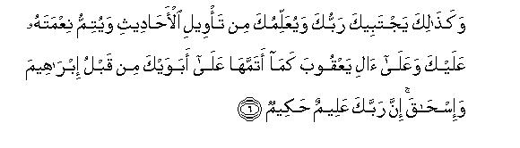
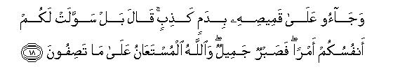
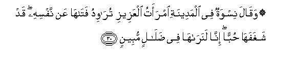
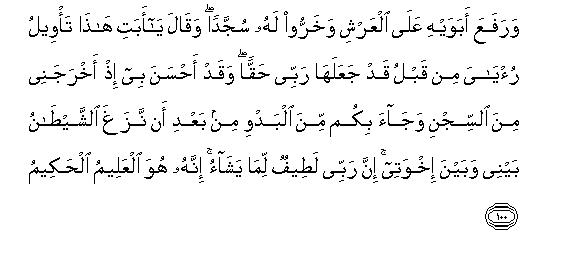
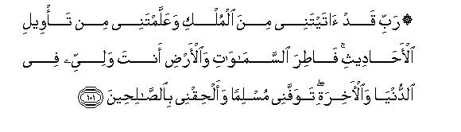

بسم الله الرحمن الرحيم
Sayyid Abul Ala Maududi - Tafhim al-Qur'an - The Meaning of the Qur'an
 12.
Surah Yusuf (Joseph)
12.
Surah Yusuf (Joseph)
The subject matter of this Surah indicates that it was revealed during the last stage of the Holy Prophet's residence at Makkah, when the Quraish were considering the question of killing or exiling or imprisoning him. At that time some of the unbelievers put this question (probably at the instigation of the Jews) to test him :"Why did the Israelites go to Egypt?" This question was asked because they knew that their story was not known to the Arabs for there was no mention of it whatever in their traditions and the Holy Prophet had never even referred to it before. Therefore they expected that he would not be able to give any satisfactory answer to this question or would first evade it, and afterwards try to inquire about it from some Jew, and thus he would be totally exposed. But, contrary to their expectations, the tables were turned on them, for Allah revealed the whole story of Prophet Joseph then and there, and the Holy Prophet recited it on the spot. This put the Quraish in a very awkward position because it not only foiled their scheme but also administered a warning to them by aptly applying it to their case, as if to say, "As you are behaving towards this Prophet, exactly in the same way the brothers of Prophet Joseph behaved towards him; so you shall meet with the same end."
From the above it is clear that this Surah was sent down for two objects:
The first object was to give the proof of the Prophethood of Muhammad (Allah's peace be upon him), and that too, the one demanded by the opponents themselves so as to prove conclusively that his knowledge was not based on mere hearsay, but was gained through Revelation. This aspect has been stated explicitly in its introductory verses and explained plainly in its concluding portion.
The second object was to apply it to the Quraish and warn them that ultimately the conflict between them and the Holy Prophet would end in his victory over them. As they were then persecuting their brother, the Holy Prophet, in the same way the brothers of Prophet Joseph had treated him. The Quraish were told indirectly that they would also fail in their evil designs just as the brothers of Prophet Joseph had failed in his case, even after casting him into the well. This is because none has the power to defeat the Divine will. And just as the brothers of Prophet Joseph had to humble themselves before him, so one day the Quraish shall have to beg forgiveness from their brother whom they were then trying to crush down. This, too, has been made quite plain in v. 7: "Indeed there are signs in this story of Joseph and his brothers for these inquirers from among the Quraish."
The fact is that by applying this story to the conflict, the Quran had made a bold and clear prophecy, which was fulfilled literally by the events that happened in the succeeding ten years. Hardly two years had passed after its revelation, when the Quraish conspired to kill the Holy Prophet like the brothers of Prophet Joseph, and he had to emigrate from Makkah to Al-Madinah, where he gained the same kind of power as Prophet Joseph had gained in Egypt. Again, in the end the Quraish had to humble themselves before him just like the brothers of Prophet Joseph, when they humbly requested, "Show mercy to us for Allah rewards richly those who show mercy" (V. 88), and Prophet Joseph generously forgave them, (though he had complete power to wreak vengeance on them,) saying, " today no penalty shall be inflicted on you. May Allah forgive you:He is the greatest of all those who forgive" (V. 92). The same story of mercy was repeated, when after the conquest of Makkah, the crest fallen Quraish stood meekly before the Holy Prophet, who had full power to wreak his vengeance on them for each and every cruelty committed by them. But instead, he merely asked them, "What treatment do you expect from me now?" They replied, "You are a generous brother and the son of a generous brother." At this, he very generously forgave them, saying, "I will give the same answer to your request that Joseph gave to his brothers: “...today, no penalty shall be inflicted on you: you are forgiven."
Moreover, the Quran does not relate this story as a mere narrative but uses it, as usual, for the propagation of the Message in the following ways:-
Throughout the narrative the Quran has made it clear that the Faith of Prophets Abraham, Isaac, Jacob and Joseph (Allah's peace be upon them all) was the same as that of Prophet Muhammad (Allah's peace be upon him) and they invited the people to the same Message to which Muhammad (Allah's peace be upon him) was inviting them.
Then it places the characters of Prophet Jacob and Prophet Joseph side by side with the characters of the brothers of Joseph, the members of the trade caravan, the court dignitary; Al Aziz of Egypt and his wife, the "ladies" of Egypt and the rulers of Egypt and poses a silent question to the reader, as if to say, "Contrast the former characters molded by Islam on the bedrock of the worship of Allah and accountability in the Hereafter with the latter molded by kufr and "ignorance" on the worship of the world and disregard of Allah and the Hereafter, and decide for yourselves which of these two patterns you would choose."
The Quran has used this story to bring forth another truth: whatever Allah wills, He fulfills it anyhow, and man can never defeat His plan with his counterplans nor prevent it from happening nor change it in any way whatever. Nay, it often so happens that man adopts some measure to fulfill his own design and believes that he has done that very thing which would fulfill his design, but in the end he finds to his dismay that he had done something which was against his own and conducive to the Divine purpose. When the brothers of Prophet Joseph cast him into the well, they believed that they had once for all got rid of the obstacle in their way but in fact, they had paved the way for the Divine purpose of making him the ruler of Egypt, before whom they would have to humble themselves in the end. Likewise, the wife of Aziz had sent Prophet Joseph to the prison, floating over the thought that she had wreaked her vengeance on him, but, in fact, she had provided for him the opportunity for becoming the ruler of Egypt and for putting herself to the shame of confessing her own sin publicly.
And these are not the solitary instances which prove the truth that even if the whole world united to bring about the down fall of the one whom Allah willed to raise high, it could not succeed. Nay, the very "sure and effective" measures that were adopted by the brothers to degrade Joseph were used by Allah for the success of Joseph and for the humiliation and disgrace of his brothers. On the other hand, if Allah willed the fall of one, no measure, howsoever effective, could raise him high : nay, it helped to bring about his fall and the disgrace of those who adopted them.
Moreover, the story contains other lessons for those who intend to follow the way of Allah. The first lesson it teaches is that one should remain within the limits, prescribed by the Divine Law, in one's aims and objects and measures, for success and failure are entirely in the hands of Allah. Therefore if one adopts pure aims and lawful measures but fails, at least one will escape ignominy and disgrace. On the other hand, the one who adopts an impure aim and unlawful measures to achieve it, shall not only inevitably meet with ignominy and disgrace in the Hereafter, but also runs the risk of ignominy and disgrace in this world.
The second lesson it teaches is that those who exert for the cause of truth and righteousness and put their trust in Allah and entrust all their affairs to Him, get consolation and comfort from Him, for this helps them face their opponents with confidence and courage and they do not lose heart, when they encounter the apparently terrifying measures of the powerful enemies. They will persevere in their task without fear and leave the results to Allah.
But the greatest lesson this story teaches is that if the Believer possesses true Islamic character and is endowed with wisdom, he can conquer a whole country with the strength of his character alone. The marvelous example of Prophet Joseph teaches us that a man of high and pure character comes out successful even under the most adverse circumstances. When Prophet Joseph went to Egypt, he was only a lad of seventeen years, a foreigner, all alone and without any provisions; nay, he had been sold there as a slave. And the horrible condition of the slaves during that period is known to every student of history. Then he was charged with a heinous moral Crime and sent to prison for an indefinite term. But throughout this period of affliction, he evinced the highest moral qualities which raised him to the highest rank in the country.
The following historical and geographical details will help understand the story:
Prophet Joseph was a son of Prophet Jacob and a grandson of Prophet Isaac and a great grandson of Prophet Abraham (Allah's peace be upon them all). The Bible says (and the allusions in the Quran also confirm this) that Prophet Jacob had twelve sons from four wives. Prophet Joseph and his younger brother Benjamin were from one wife and the other ten from the other wives. Prophet Jacob had settled at Hebron (Palestine) where his father Prophet Isaac and before him Prophet Abraham lived and owned a piece of land at Shechem as well.
According to the research scholars of the Bible, Prophet Joseph was born in or about 906 B. C. and the incident with which this story begins happened in or about 890 B. C. He was seventeen when he saw the dream and was thrown into the well. This well was near Dothan to the north of Shechem according to Biblical and Talmudic traditions, and the caravan, which took him out of the well, was coming from Gilead (Trans-Jordan), and was on its way to Egypt.
At that time Fifteenth Dynasty ruled over Egypt, whose rulers are known in history as the Hyksos kings. They belonged to the Arab race, but had migrated from Palestine and Syria to Egypt in or about 2000 B. C. and taken possession of the country. The Arab historians and the commentators of the Quran have given them the name of Amaliq (the Amalekites), and this has been corroborated by the recent researches made by the Egyptologists. They were foreign invaders who had got the opportunity of establishing their kingdom because of the internal feuds in the country. That is why there was no prejudice in the way of Prophet Joseph's ascendancy to power and in the subsequent settlement of the Children of Israel in the most fertile region of Egypt. They could gain that power and influence which they did, because they belonged to the same race as the foreign rulers of Egypt.
The Hyksos ruled over Egypt up to the end of the fifteenth century B. C., and practically all the powers remained in the hands of the Israelites. The Quran has made a reference to this in v. 20 of Al-Ma'idah: “...He raised Prophets among you and made you rulers.” Then there arose a great nationalist movement which overthrew the power of this dynasty and exiled 250,000 or so of the Amalekites. As a result of this, a very bigoted dynasty of Copts came into power and uprooted everything connected with the Amalekites. Then started that persecution of the Israelites which has been mentioned in connection with the story of Prophet Moses.
We also learn from the history of Egypt that the "Hyksos kings" did not acknowledge the gods of Egypt and, therefore, had imported their own gods from Syria, with a view to spreading their own religion in Egypt. This is the reason why the Quran has not called the king who was the contemporary of Prophet Joseph by the title of "Pharaoh," because this title was associated with the religion of the original people of Egypt and the Hyksos did not believe in it, but the Bible erroneously calls him "Pharaoh." It appears that the editors of the Bible had the misunderstanding that all the kings of Egypt were "Pharaohs."
The modern research scholars who have made a comparative study of the Bible and the Egyptian history are generally of the opinion that Apophis was the Hyksos king, who was the contemporary of Prophet Joseph.
At that time Memphis was the capital of Egypt, whose ruins are still found on the Nile at a distance of 4 miles south of Cairo. When Prophet Joseph was taken there, he was 17 or 18 years old. He remained in the house of Aziz for three years and spent nine years in prison, and then became the ruler of the land at the age of thirty and ruled over Egypt independently for eighty years. In the ninth or tenth year of his rule he sent for his father, Prophet Jacob, to come from Palestine to Egypt with all the members of his family and, according to the Bible, settled them in the land of Goshen, where they lived up to the time of Prophet Moses. The Bible says that before his death, Prophet Joseph bound his kindred by an oath: "when you return from this country to the house of your forefathers you must take my bones out of this country with you. So he died a hundred and ten years old, and they embalmed him..."
Though the story of Prophet Joseph as given in the Quran differs very much in its details from that given in the Bible and the Talmud, the Three generally agree in regard to its component parts. We shall explain the differences, when and where necessary, in our Explanatory Notes.

In the name of Allah, the Compassionate, the Merciful.
[1-3] Alif Lam Ra. These are the verses of the Book that makes its object perfectly clear. We have sent it down as Qur'an1 in Arabic so that you (Arabs) may understand it well.2 O Muhammad, by revealing this Qur'an to you, We narrate to you events and truths in the best manner: though before this you were utterly unaware (of these things).3
[4] This is the narrative of that time, when Joseph said to his father, "O father, I have seen in a dream eleven stars and the sun and the moon; I saw that they were prostrating themselves before me."

[5-6] In response to this, his father said, "My little son, say nothing of this dream to your brothers, lest they should plot any evil scheme against you.4 Be on your guard, for Satan is the avowed enemy of man. And it will happen so (as you have seen in your dream) that your Lord will choose you (for His work5 ) and impart you the full understanding of problems,6 and will perfect His blessing upon you and upon the children of Jacob as He perfected it on your forefathers- Abraham and Isaac; surely your Lord is All-Knowing, All-Wise.7


[7-18] Indeed there are Signs in this story of Joseph and his brothers for these inquirers. This is how the story begins: his brothers (held a consultation and) said to one another, "This Joseph and his brother8 are dearer to our father than ourselves, even though we are a band. Truly our father seems to have lost his balance of mind.9 Let us, therefore, kill Joseph or throw him somewhere so that your father's attention should be turned exclusively towards you. After this, you should again become righteous people."10 At this one of them said, "Don't kill Joseph; but if you are bent on doing something, cast him into some dark well. Maybe some caravan passing by will take him out of it." After this consultation, they said to their father, "Father, why is it that you do not trust in us in regard to Joseph, though we are his sincere well-wishers? Send him with us tomorrow that he may freely eat and enjoy sport: we will take good care of him."11 The father replied, "It troubles me that you should take him away with you, for I fear lest a wolf should eat him up, when you are off your guard." They replied, "If a wolf should eat him up in our company, when we are a band, we shall be worthless people indeed!" When, after persisting like this, they took him away with them, and decided to cast him into a dark well, We revealed this to Joseph: "A time will surely come when you will admonish them about this act of theirs; now they do not comprehend its consequences."12 At nightfall they returned to their father, weeping and wailing, and said, "O father! we were absorbed in running races, and we had left Joseph with our things, when a wolf came and devoured him: but you will never believe us, even though we were truthful". And (in proof thereof) they had brought his shirt with the false blood upon it. Hearing this, the father said, "No! your evil souls have made this heinous act easy for you. I, however, will bear this patiently with a good grace.13 And Allah alone can be asked for help regarding what you are concocting."14

[19-20] A caravan came there; they sent their water carrier and he let down his bucket in the well. (Seeing Joseph in it,) he cried aloud, "Good news! Here is a young lad." So they hid him as merchandise, but Allah knew well what they were doing. Then they sold him for a paltry price.15 a few dirhams. And they did not expect a big price for him.
[21] The person16 who bought him in Egypt said to his wife,17 "Deal kindly with him: maybe he proves useful to us, or we may adopt him as our son."18 Thus We made a way for establishing Joseph in the land and arranged to teach him the understanding of affairs.19 Allah does whatever He wills but most people do not understand this.
[22] And when he reached his full maturity, We bestowed on him judgment and knowledge.20 This is how We reward the righteous people.
[23-29] Now the woman in whose house he was began to tempt him, and one day she closed the doors and said, "Come here." Joseph replied, "May Allah protect me from this! My Lord has given me a good abode: (and should I, then, misbehave like this?) Such workers of iniquity never fare well."21 She advanced towards him, and he also would have advanced towards her, had he not perceived his Lord's argument.22 This was so that We may remove indecency and immodesty from him;23 indeed he was one of Our chosen servants. At last Joseph and she raced towards the door one behind the other and she rent his shirt (pulling it) from behind, and they met her husband at the door. Seeing him, she cried out, "What punishment does the one deserve who shows evil intentions towards your wife? What else than this that he should be put in prison or tortured with painful torment?" Joseph said, "It was she who solicited me." At this a member of her own family gave the circumstantial evidence,24 saying, "If the shirt of Joseph is torn from the front, the woman speaks the truth and he is a liar. And if his shirt is torn from the back, she speaks a lie and he is truthful.25 When the husband saw that the shirt was rent from the back, he said, "This is one of your cunning devices: your devices are very cunning indeed! Joseph, leave this matter. And, O woman, beg forgiveness for your sin, for you were indeed the wrongdoer."25a

[30-31] The women of the town began to talk about this matter, saying, "The wife of Al-`Aziz has been soliciting her young slave, for she has passionately fallen in love with him. We think that she is manifestly doing the wrong thing." When she heard about their cunning talk, she invited them to a banquet at her house and got ready pillows for the party26 and placed before each of them a knife. Then, (when they were engaged in cutting fruit) she made a sign to Joseph. as if to say, "Come out before them." When they caught sight of him, they were so amazed that they cut their hands, and exclaimed spontaneously, "Good God! He is no man; he is a noble angel!"
[32-34] She said, "Well, this is he concerning whom you blamed me. No doubt, I sought to seduce him and he escaped. Yet if he does not yield to my bidding, he shall be cast into prison, and shall be humbled and disgraced."27 Joseph said, "My Lord! I prefer imprisonment to that to which they invite me. If Thou dost not ward off their cunning devices from me, I may be caught in their snare, and become one of the ignorant. "28 His Lord granted his prayer and warded off their guile from him.29 Indeed, He hears everyone and knows everything.
[35] Then it occurred to them that they should cast him into prison for a time, even though they themselves had seen manifest signs30 (of his innocence and of the guilt of their women).
[36-41] Two31 other slaves also entered into the prison along with him.32 One day one of them said, "I dreamed that I am pressing grapes into wine," and the other said, "I dreamed that I am carrying loaves of bread on my head, of which birds are eating. " Then both of them said, "Tell us their interpretations, for we have seen that you are a righteous man."33 Joseph replied, "I will tell you their interpretations before the food you get comes to you. This ability of making interpretations is a part of the knowledge that my Lord has bestowed on me. The fact is that I do not follow the ways of those people who do not believe in Allah, and deny the Hereafter. I follow the Way of my forefathers, Abraham, Isaac and Jacob: it is not for us to associate anyone with Allah as partner. This is Allah's bounty upon us and upon all mankind (that He has not made us the servants of any other than Himself), yet most people are not grateful. O my fellow prisoners, say, which, is better: various gods or the One Omnipotent Allah? The gods you worship other than Him are nothing more than mere names you and your forefathers have invented, for Allah has sent down no authority for them. Sovereignty belongs to none but Allah. He has commanded that you shall not worship anyone but Him. This is the right and straight Way, but most people do not know this. My fellow prisoners, here are the interpretations of your dreams. One of you will serve wine to his lord (the king of Egypt): as for the other, he shall be crucified and birds will eat of his head. Thus has that matter been decreed whereof you inquired."34
[42] Then to the one who he thought would be released. Joseph said, "Mention me to your lord (the king of Egypt)". But Satan made him so neglectful that he forgot to mention him to his lord, and so Joseph remained in the prison for several years.35
[43-44] One36 day the king said, "I saw in a dream seven fat cows whom seven lean cows were devouring. Likewise I saw seven green ears of corn, and seven withered ones. O my courtiers, tell me the interpretation of my dream, if you understand the meanings of dreams"37 They answered, "These are the result of confused nightmares and we do not understand their meaning."
[45] Then one of the two prisoners who had been released remembered the dung after a long time and said, "I will tell you its interpretation: just send me (to Joseph in the prison.38 )"
[46-49] Going to Joseph, he said, "Joseph, O man of righteousness!39 tell me the meaning of the dream of seven fat cows whom seven lean cows are devouring, and of seven green ears of corn and seven withered ones. Maybe I go back to those people and they might understand it."40 Joseph answered, "You will cultivate land for seven consecutive years as usual. During this period thrash out of the harvest you reap only that much grain that might suffice for your food and leave the rest in the ears. Then, after this, there shall come upon you seven hard years. Then you will eat up all that corn you might have kept for that period except that you will have reserved in the store. After that will come another year in which there will be abundant rainfall in answer to the prayer of the people and they will press (juice and oil.)"41
[50] The king said, "Bring him to me." But when the royal envoy came to him, Joseph said,42 "Go back to your lord and ask him to inquire about the matter of the women who cut their hands. Indeed my Lord has full knowledge of their cunning."43
[51] The king questioned the women,44 saying, "What do you say about the incident when you tried to entice Joseph?" They all cried out with one voice, "God protect us! we found no tinge of evil in him. " Then the wife of Al-`Aziz also confessed, "Now that the truth has come to light, it was I who tried to entice him. In fact, he is absolutely in the right."45
[52-53] (Joseph said46 ) "By this inquiry, I meant to let him (Al-`Aziz) know that I did not play him false secretly and that Allah does not lead to success the machinations of deceivers. Yet I am not holding my soul to be immune from sin, for the soul incites to evil, except of the one on whom my Lord shows mercy. Indeed my Lord is Forgiving and Merciful."
[54] The king said, "Bring him to me so that I may attach him exclusively to myself."
[55] When Joseph had a talk with the king, he said, "From now you have an honorable place with us, and you will enjoy our full confidence."47 Joseph said, "Please place all the resources of the land under my trust for I know how to guard them and also possess knowledge."47a
[56-57] Thus did We give power to Joseph in the land: he had every right to take possession of any piece of it that he desired.48 We bestow Our bounty upon anyone We will. We do not let go waste the reward of the righteous people; yet the reward of the life in the Hereafter is much better for those who believed and behaved in a God-fearing manner.49
[58-62] Joseph's brothers came to Egypt and presented themselves before him.50 He recognized them but they did not.51 When he had them given the provisions due to them and they were leaving, he said, "Bring your step brother to me. Do you not see that I give full measure and am the best of hosts? But if you do not bring him to me you shall have no grain from me: nay you should not even come near me."52 They replied "We will try our very best to persuade his father to send him with us. This we will surely do." Joseph spoke aside to his slaves. "Place secretly in their saddle bags the goods they have bartered for corn. " Joseph did this in the hope that when they would return home to their people, they would come to know of it; maybe they should come back again.


[63-68] When they returned to their father, they said "Dear father now that corn has henceforth been denied to us, please send our brother with us so that we may fetch corn, and we take full responsibility for his safety." The father replied "Should I entrust him to you as I entrusted his brother to you before? Allah is the best Guardian and He is the most Merciful. " When they opened their saddle-bags they found that their merchandise had also been returned to them. Seeing this, they cried with joy, "Dear father, look here! What more do we desire? Here is our merchandise returned to us. Therefore we will go back and bring provisions of food for our family; we will take good care of our brother and obtain an extra camel load of corn. Such an addition will be made easily." Their father replied, "I will never send him with you until you give me a pledge in Allah's name that you shall bring him back to me unless it be that you are rendered helpless by circumstances." When they had given him their solemn pledges he said, "Note it well that Allah is guarding and watching over this pledge of ours." Then he said "O my children, do not enter the capital of Egypt by one gate but go into it by different gates.53 However know it well that I cannot ward off from you Allah's will for none other than He has any authority whatsoever. In Him I have put my trust and all who want to rely upon anyone should put their trust in Him alone. " And it so happened that when they entered the city by different gates as their father had advised them the precautionary measure proved ineffective against Allah's will. Of course Jacob had done his best to avert the fear he had in his heart. Indeed he possessed knowledge because of what We had taught him: but most people do not understand the reality of the matter.54
[69] When they presented themselves before Joseph he called his brother alone to himself and said to him "I am the same brother of yours (who was lost). Now you need not grieve for what they have been doing."55
[70-76] While Joseph was arranging for the loading of the packs of his brothers, he put his cup in the pack of his own brother.56 Afterwards a herald shouted, "Ho, cameleers! you are thieves!57 Turning back, they asked, "What is it that you are missing?" The royal servants replied, "We do not find the cup of the king." (And their headman added, ) "The one, who would restore it, will be awarded a camel load of corn. I guarantee this." The brothers replied, "By God, you know it well that we have not come for spreading disorder in this country, and we are no thieves." At this, they said, "Very well, what shall be the punishment of the thief, if you are found to be liars?" They replied, "His punishment should be that he himself be made a bondsman, if the thing is found in his pack. At home we punish such offenders like this."58 Then Joseph first began to search the packs of his step-brothers before searching the pack of his own brother. At last he took it out from the pack of his brother. Thus We supported Joseph with Our plan:59 or it did not behoove Joseph to seize his brother (by the king's law) except that Allah willed it so.60 We raise high the ranks of those We will, and there is the One Whose knowledge is far greater than the knowledge of all others.
[77] At this discovery the brothers remarked, "There is nothing strange in it that he has committed a theft, for his brother (Joseph) also committed a theft before this."61 Hearing this, Joseph suppressed his feelings and did not reveal the secret to them, but said only this in an under tone, "What a bad people you are! you are accusing me (to my face) of the thing the truth of which Allah knows best."
[78-79] Then they said, "O exalted sir,62 he has a very aged father: therefore take one of us in his stead. We see that you are a very generous man." Joseph replied, "God forbid that we should seize any other than the one with whom we have found our property:63 for, if we do this, we shall be unjust."
[80-82] When they despaired of moving Joseph, they went to a corner and conferred together. The eldest of them said, "You know that your father has taken a solemn pledge from you in the name of Allah, and you also know that you had wronged Joseph before this. I will not, therefore, leave this land until my father gives me permission or Allah decides in my favor, for Allah is the best of all those who decide. Go back to your father and say, `Dear father, your son committed a theft. We did not see him stealing: we are simply stating what we have come to Know and we could not guard against the unforeseen. You may inquire from the people of that town and from the caravan in which we traveled back home. We are surely telling the truth'."
[83-87] Hearing this story, the father said, "Your souls have made another thing easy for you.64 Well, I will bear this, too, patiently with good grace. Maybe Allah will bring them all to me, for He knows everything and all His works are based on wisdom." Then he turned his face from them and cried, "Alas for Joseph! "-He was sorely oppressed with suppressed sorrow and his eyes had become white with grief. - The sons exclaimed, `By Allah! You have not ceased to think of Joseph and now things have come to such a pass that you will ruin your health or kill yourself with grief for him. " He replied, "I complain to Allah alone of my sorrow and grief. And I know from Allah what you do not know. My children, go and make a search for Joseph and his brother. Don't despair of Allah's mercy, for it is the unbelievers alone who despair of His mercy."
[88-93] When they went back to Egypt and presented themselves before Joseph, they humbly. said, "Exalted sir! we and our family are in great distress: though we have been able to bring only goods of scant worth for barter, we request you to give us full measure of grain, and be charitable to us:65 for Allah rewards richly those who are charitable." At this Joseph. who could contain himself no longer, exclaimed, "Do you know what you did with Joseph and his brother, when you were ignorant?" This took them by surprise and they cried, "Why! are you indeed Joseph"? He replied, "Yes, I am Joseph, and here is my brother. Allah has been very gracious to us. The fact is that Allah does not let go waste the recompense of such righteous people as practice piety and fortitude." They said, "By God! Allah has exalted you above us, and we have indeed been sinful." He replied, "Today no penalty shall be inflicted on you. May Allah forgive you! He is the most Merciful of all. Go, take this shirt of mine, and cast this over the face of my father and he shall recover his sight. Then bring all the members of your family to me."
[94-95] When this caravan departed (from Egypt), their father said (in Cana'an), "I am surely perceiving the smell66 of Joseph, though you might think me to be in the dotage." The people of the house answered, "By God, you are still suffering from your old illusion."67
[96-98] But when the bearer of the good tidings arrived there. he cast Joseph's shirt on Jacob's face, and his sight came back to him. Then he said, "Didn't I say to you that I know from Allah what you do not know?" They exclaimed all together" Dear father, pray for the pardon of our sins, for we have indeed been sinful." He replied, "I will implore my Lord to forgive you, for He is Forgiving and Merciful."
[99] And when they came to Joseph,68 he seated his parents along with himself and said (to the people of his family), "Now proceed to the city. God willing, you will live in peace."


[100-101] (After entering the town,) he raised his parents to the throne,69 and seated them along with himself and all of them spontaneously bowed down before him.70 Joseph said, "Dear father, This is the interpretation of the dream I dreamed long before: my Lord has now turned that into reality. It is His grace that He took me out of the prison and brought you to me from the desert after Satan had stirred up strife between me and my brothers. It is a fact that my Lord fulfills His designs in mysterious ways, for He is All-Knowing, All-Wise. Lord, Thou hast given me kingdom and taught me how to probe into problems. Creator of the earth and the heavens ! Thou art my Guardian in this world and the Hereafter: Let me die as a Muslim, and join me with the righteous in the end."71
[102-104] O Muhammad! this story which We are revealing to you is of those things that were not known to you: for you were not with the brothers when they had conspired together a plot against Joseph. Yet most of the people are not going to believe it, howsoever eager72 you may be, and may even demand no recompense for this Message: it is simply an instruction for all the people of the world.73
[105-107] And74 many are the Signs in the heavens and the earth; yet they pass by and pay no heed to them.75 So, most of them who believe in Allah join other deities also with Him.76 Do they feel secure that Allah's scourge shall not overwhelm them, or that the hour of Doom will not come upon them suddenly when they are unaware?77
[108] Tell them plainly, "This is my way. I invite you to Allah. I myself see my Way in full light and my followers see it, too. And Allah is free from any defect,78 and I have nothing to do with those who practice shirk."
[109-110] O Muhammad! All the Messengers, whom We sent before you, were also human beings, and lived in the same habitations, and to them We sent Our Revelations. Have these people, then, not traveled in the land and seen what has been the end of those who have passed away before them ? Surely, the abode of the Hereafter is far better for those who (believed in the Messengers and) adopted the attitude of piety. What! Will you not understand it even now?79 (It also happened like this with the former Messengers: they went on conveying the Message for a long time- but the people did not listen to them,) till the Messengers despaired of the people and the people also thought that a falsehood had been presented to them: then suddenly Our succor reached the Messengers. And when such an occasion comes, We deliver whomsoever We will, but Our scourge cannot be averted from the criminals.
[111] There is an object lesson in these stories of the former people for those, who possess common sense. That thing which is being sent down in the Qur'an is not a forgery, but (is absolutely genuine and) it confirms the previous Scriptures, gives details80 of everything, and is a guidance and blessing for the Believers.
1The Arabic word (Qur`an: "to read") is originally the infinitive form of the verb When the infinitive form of a verb in Arabic is used as a name, it implies that that thing (or person) possesses the characteristics in their perfection. This Book has been named "Qur'an" to indicate that it is meant to be read by all and sundry and is to be read often and over and over again.
2This does not mean that this Book has been sent down exclusively for the Arabs. What it means is only this: "Of all the people, O Arabs, you should understand the excellences of the Qur'an, which are a sure proof of its being Divine Revelation, for it is in your own language and you have no excuse to put forward that it is in a foreign language which you do not understand. "
Some people wrongly infer from this verse that this Book had been sent down for the Arabs and not for the non-Arabs; therefore, they assert, it cannot be claimed that it is the Guidance for the whole mankind. But obviously this is a frivolous objection raised by hose who do not understand its real significance. It is obvious that a book, though meant for universal guidance, will necessarily have to be put in words in some language so that the people speaking that language should understand its teachings and then become the means of conveying its guidance to other peoples. This is the only natural way of spreading the message of a movement on a universal scale.
3This was to impress indirectly on the unbelievers of Makkah the fact that the Messenger did not know anything about the story of the settlement of the Israelites in Egypt, but was being informed of this by Revelation from Allah. This introduction was necessary because, as has been stated in the preface to this Surah, the disbelievers had put an abrupt question concerning this matter in order to "expose" the Holy Prophet by this test. The answer is to this effect: "Tell them, O Muhammad, that, though you did not know anything about the settlement of the Israelites in Egypt before this, you have now received a Revelation about this from Us."
4As the meanings of the dream were quite obvious, Prophet Jacob had a genuine fear that Joseph's ten step-brothers would become all the more envious of him when they would hear this: So he warned his righteous son not to mention his dream to his brothers, for he knew that those sons of his did not bear the moral character worthy of the sons of a Prophet, and, therefore, they were up to any evil design against him out of mere envy. As regards the dream, the "sun" in it was Prophet Jacob, the "moon" his wife, (Prophet Joseph's step-mother) and the "eleven stars" his eleven brothers.
5That is, "Bless him with Prophethood."
6The Arabic words of the Text do not mean merely "the interpretation of dreams", as has been generally understood. They are comprehensive and imply also this: "Allah will bless you with the full understanding of the problems of life and their solutions and will give you the insight to reach at the reality of every matter."
7Here it should be noted that the response of Prophet Jacob to the dream of Prophet Joseph, according to the Bible and the Talmud, was quite different froth this: "And he told it to his father, and to his brethren: and his father rebuked him, and said unto him, What is this dream that thou hast dreamed? Shall I and thy mother and thy brethren indeed come to bow down ourselves to thee to the earth?" (Gen. 37: 10). Even a little thinking will help one to arrive at the conclusion that his reaction as narrated in the Qur'an is worthy of the high character of Prophet Jacob and not the one found in the Bible and the Talmud. For Prophet Joseph had not expressed any personal ambition of his but merely narrated Iris dream. If the dream was a true one, and it is obvious that Prophet Jacob interpreted it, believing it to be true, there was no reason why he should rebuke his own son, for it meant that it was the will of God and no his own ambition that he should one day rise to a high rank. Can then one expect from any reasonable person, not to mention a Prophet, that he would take it ill and rebuke the one who dreamed such a dream? And can there ever be such a noble "father" who would say bitter and stinging things to his own son for the "sin" of telling him a true dream, prophesying his future greatness?
8This brother was Benjamin. He was the real younger brother of Prophet Joseph, and was his junior by many years. Their mother had died at the birth of Benjamin. That is why Prophet Jacob paid special attention to these two motherless children. Besides, Joseph was the only son, in whom he had discerned signs of righteousness and capabilities. Accordingly, when Prophet Joseph narrated his dream to him, he was all the more convinced of his future greatness, and was perturbed at the idea lest his brothers conspired against him out of envy, if they came to know of his dream, which was self-explanatory. For Prophet Jacob knew that his other ten sons were not of the right type, and this was proved by the subsequent events. Therefore, naturally he was not happy with them. It is, however, strange that the Bible gives a different reason for the envy his brothers bore against Prophet Joseph. They were filled with envy against him because "Joseph gave unto his father their evil report."
9In order to grasp the full significance of the "grievance" the ten sons had against their father for "neglecting" them, we should keep in view the conditions of the clannish life. As there was no established state, each clan led its own independent life side by side with other clans. It is obvious that the power of the head of the clan depended entirely on the number of sons and grand-sons, and brothers and nephews he had to defend the life, honor and property of the family. Therefore, the one leading the clannish life naturally paid more attention to one's own grown up sons, etc., than to children and women of the family. As Prophet Jacob was leading clannish life, these sons of his expected a preferential treatment from him, but the Prophet thought otherwise. So they remarked, "Truly our father seems to have lost his balance of mind; otherwise he could not have neglected us, and loved our two younger brothers more than us, for we are strong young men and can stand him in good stead at the time of need while these youngsters are useless as they themselves stand in need of protection."
10This sentence depicts the true psychology of those people who give themselves up to the lusts of their hearts, and, at the same time, do not want to break away completely from faith and religion. This is how a person of this type behaves. Whenever he is tempted to do a certain evil thing, he makes up his mind to do it first and puts off the demands of his faith for the time-being. And if his conscience pricks him, he tries to soothe it, saying, "Have a little patience. Let me first do this evil thing, which is an obstacle in my way. Then I will repent and become as good as Thou desirest to see me." As the brothers of Prophet Joseph belonged to this type, they soothed their pricking consciences, saying, "After doing away with Joseph, who is the chief obstacle in our way, we will again become righteous."
11In this thing also the Qur'an differs from the Bible and the Talmud, according to which it was not the brothers, who requested their father to send Joseph with them but Prophet Jacob himself sent him with an errand to Shechem, where they were feeding their father's flocks. Obviously the version of the Qur'an is more realistic, for Prophet Jacob could never have thought of sending his beloved son with there, because he knew it full well that they were envious of him, and sending him there would have been sending Joseph deliberately into the jaws of death.
12The Arabic words ("they do not understand" ) may very appropriately mean three things. First, "We were comforting Joseph, and his brothers were quite unaware of this that a Revelation was being sent to him." Second, "You will let them know of this evil act of theirs in such circumstances that they can never even imagine you to be there." Third, "Today they are committing an evil act, but they do not know its future consequences."
There is no mention of this in the Bible and the Talmud that Allah sent a Revelation to comfort Prophet Joseph at that time of his affliction. On the contrary, the Talmud says that when he was thrown into the well, Prophet Joseph wept and cried aloud and implored his brothers for mercy, as if he was no better than any other lad of the desert, who would weep and cry if he were to be thrown into a well. But the picture the Qur'an depicts is that of a young man, who is destined to play the part of a great personality in history.
13The literal meaning of "good patience" which implies a patience that enables one to endure all kinds of troubles and afflictions in a calm, self-possessed and unemotional manner, without complaining or crying or weeping, as is worthy of great minds.
14Prophet Jacob's reaction to the news of Joseph's death, as depicted in the Qur'an, is also different from that given in the Bible and the Talmud. According to them he was upset by the sad news and behaved like an ordinary father. The Bible says, "And Jacob rent his clothes, and put sackcloth upon his loins. And mourned for his son many days." (Gen. 37: 34). And the Talmud says that at the sad news Jacob gave himself up to the abandonment of grief, and lay with his face to the ground.... and refused to be comforted, and cried, 'Some wild beast has devoured Joseph and I shall never see him more'; and he mourned for Joseph for many years. (The Talmud, H. Polano, pp. 78, 79).
When we contrast this picture with the one depicted in the Qur'an, we clearly see that the Qur'anic picture is that of a dignified and great personality. He is not upset in the least at hearing the sad news of his beloved son but at once gets to the bottom of the matter, and tells the envious brothers, "Your tale is false and fabricated." Then he shows "good patience" as a Prophet should and puts his trust in the help of God. "
15Though the matter of the disposal of Prophet Joseph by his brothers was simple, the Bible has made this very complicated. It is obvious that the brothers threw Joseph into the well and went away. Afterwards a caravan came there and pulled him out and carried him to Egypt where they sold him. But the Bible says that the brothers cast him into a pit: then a company of Ishmaelites came there and they agreed to sell him to them. But in the meantime the Midianite merchantmen had drawn and lifted up Joseph and sold him to the Ishmaelites who brought him into Egypt. (Gen. 37: 25-28). But the authors of the Bible forget this sale transaction and further on in v. 36 say that Prophet Joseph was sold in Egypt by the Midianites and not by the Ishmaelites as stated in v. 28. But the Talmudic version of the matter is a little different from this. It says that the Midianites drew Joseph up from the pit and carried him along with them. As they passed by, the sons of Jacob saw Joseph with them and accused them of stealing their slave. At this a furious quarrel arose and they were ready to enter upon a bloody fray. But a bargain was concluded and the sons of Jacob sold their brother to the Midianites for twenty pieces of silver, who afterwards sold him to the Ishmaelites for the same amount. Then the Ishmaelites took him into Egypt and sold him there. Incidentally, it is this Talmudic version that has given rise to the tradition among some Muslims that the brothers of Joseph had sold him. But it should be noted that the Qur'an does not confirm this tradition.
16According to the Bible his name was Potiphar. But the Qur'an mentions him merely by the title (Al-'Aziz). As the Qur'an uses the same title for Prophet Joseph, when he rose to a high rank, it appears that the person held a high office or rank in Egypt, for the word (`Aziz) stands for a powerful person who cannot be opposed and disobeyed. The Bible and the Talmud say that he was an officer of Pharaoh's body guards and captain of the guard. And according to a tradition from Hadrat Ibn `Abbas, related by Ibn Jarir, he was the officer of the royal treasury.
17According to the Talmud the name of his wife was Zuleikha and she is known by the same name in the Muslim traditions. As regards the other tradition among the Muslims that Prophet Joseph married her afterwards, it is neither based on the Qur'an nor on the history of the Israelites. And the fact is that it is below the dignity of a Prophet to have married such a woman about whom he had personal knowledge that she was of a bad character. And this opinion is confirmed by this general statement of the Qur'an: "Women of bad character are for men of bad character and men of bad character are for women of bad character. And the women of pure character are for men of pure character, and the men of pure character for the women of pure character.... " (XXIV : 26. )
18The fact that Potiphar had a very high opinion of Prophet Joseph from the very beginning is also confirmed by the Talmud and the Bible. The Talmud says that at this time Joseph was about eighteen years of age (and) Potiphar was very favorably impressed with his bearing and appearance. So he came to the conclusion that he belonged to some noble family and had been made a slave by the force of adverse circumstances. When the Midianites carried him before Potiphar, he said...."He does not look like a slave and I fear he has been stolen from his country and his home." That is why Potiphar did not treat him like a slave, but put him in charge of his house and all his possessions. Likewise the Bible says, "And he left all that he had in Joseph's hand; and he knew not ought he had, save the bread which he did eat." (Gen. 39: 6).
19This verse alludes to the special training Prophet Joseph needed at that time for the performance of the duties of the high rank to which he was destined to rise. Up to that time, he had been brought up in the desert, under the environment of a semi-nomadic life of a shepherd. There was neither any settled state in Canaan and Northern Arabia nor had there been any appreciable progress in culture and civilization, for it was inhabited by different independent clans with no settled government. Thus it is obvious that the training that Prophet Joseph had received in Canaan, had equipped him with the good characteristics of nomadic life coupled with the qualities of God-worship and high morality of the family of Prophet Abraham. But this was not enough to enable him to direct the affairs of Egypt, which was at that time one of the most cultured and civilized countries of the known world and required a different experience and training for the conduct of its affairs. The All-Powerful Allah made arrangements for this training and sent him to the house of an officer of a very high rank in Egypt, who entrusted him with full powers over his house and estate. This enabled him to develop all those latent abilities that were needed to fulfill his destiny, and he gained the experience that was required for the efficient conduct of the affairs of the kingdom of Egypt in the years to come.
20By the use of such words as the Qur'an usually means, "We bestowed on him Prophethood," for the Arabic word (hukmun) stands for both judgment and "authority" and (`ilmun) hen stands for that Knowledge which is directly revealed to the Prophets by Allah. Thus, the Arabic words of the Text will mean: "We gave him the power and the authority and the knowledge needed for judging rightly the affairs of the people."
21Generally the commentators and translators are of the opinion that Prophet Joseph used (Rabbi "My Lord") for the master of the house, and what he meant to imply by way of argument was this: "My Lord has treated me very kindly and kept me well in the house. How can I, then, be so disloyal and ungrateful as to commit adultery with his wife?" I, however, strongly differ with such a translation and commentary. Though the Arabic usage of (rabb) admits of such a meaning, I have two strong reasons against this here. First, it is far below the dignity of a Prophet to refrain from a sin because of the regard he had for some person other than Allah. Second, there is not a single instance in the Qur'an that a Prophet ever called anyone other than Allah his "rabb." Prophet Joseph himself differentiates between his creed and that of the Egyptians making it plain that his ( "rabb" = Lord) was Allah, while they had made other human beings their "rabb". Then this verse should be considered from another point of view: when ("rabbi") may also mean "My Lord", Prophet Joseph might have invoked Allah. Why should then one take the other meaning, "my master", which most surely implies something that is against the right creed?
22"His Lord's argument" means inspiration from Allah to rouse his conscience to the fact that it was not worthy of him to yield to the temptation by the woman. As regards the question, "What was that argument", it has been stated in the preceding verse, that is, "My Lord has shown much kindness towards me. Should I, then, misbehave like this? Such workers of iniquity never fare well. " This was the "Divine argument" that saved Prophet Joseph in the prime of youth from that great temptation. The significance of "Joseph also would have advanced towards her, had he not seen his Lord's argument" is this: "Even a Prophet like Joseph (Allah's peace be upon him) could not have been able to save himself from sin, had not Allah guided him rightly with His argument. Incidentally, this verse makes plain the nature of the "Immunity" of Prophets from sin. It does not mean that a Prophet is infallible and incapable of committing any error, offense or sin or doing wrong or making a mistake. What it means is this: though a Prophet possesses passions, emotions, and carnal desires like other human beings, and is capable of committing a sin, he is so virtuous and God-fearing that he never deliberately cherishes any evil intentions, for he is endowed with such great arguments from his Lord as do not allow the lusts of the flesh over-power the voice of his conscience. And if ever he succumbs inadvertently to any of the human weaknesses, Allah at once sends a Revelation to him to set him on the right path. For the consequences of his error do not remain confined to his own person but react on the whole mankind, for even his slightest error might mislead the world to the most horrible sins.
23"....so that We may remove indecency and immodesty from him" implies two things. First, "It was because of Our grace that he could perceive Our argument, and save himself from sin, for We willed to remove indecency and immodesty from Our chosen servant. " The second meaning is rather deeper: This incident took place in the life of Joseph because this was essential for his spiritual training: "It was Our will to pass him through this hard test so that he should become immune from indecency and immodesty, for he would have to apply all his powers of piety to withstand such a great temptation, and thus become really so strong as not to yield to such things in future as well" . The importance and the need of such a hard training becomes quite obvious, if we keep in view the moral conditions of the Egyptian society of that period. We can have a glimpse of this from vv. 30-32. It appears that the women in general and the "ladies" of high society in particular, enjoyed almost the same sexual freedom as is rampant today in the "civilized" West and in the Westernized East. Allah made arrangements for the special training of Prophet Joseph in the house of his master because he had to perform his Divine Mission in a perverted society, and that too as a ruler and not as a common man. It is thus obvious from the behavior of those "ladies" of high rank, who did not feel any shame nor modesty in openly admiring the beauty of the young slave and from that of the "lady" of the house who was not ashamed of confessing openly that she did her best to tempt him and would continue to do so, that they would have done all they could to allure the young handsome ruler. Thus Allah not only made Prophet Joseph strong enough to resist such temptations in future by passing him through the hard test, but also filled the ladies with despair of gaining any "success" in this matter.
24It appears that when the master of the house came on the scene, he was accompanied by a person of his wife's household. When he heard the story of the incident, he made this proposal: "As each of them accuses the other and there is no eye-witness of what happened between the two, the matter should be decided by the help of the circumstantial evidence, by examining the condition of Joseph's shirt." Obviously this was a very reasonable way of deciding the matter, and there was, therefore, no need to resort to a miracle. According to some traditions this witness was an infant, lying in the cradle, whom Allah had given the power of speech for giving this evidence. As this story is not supported by any authority, there is no reason why the obvious, plain and reasonable thing should not be accepted that the witness was a wise and experienced member of the family of the wife, instead of having resort to a miracle based on an unauthentic tradition.
25This is what was implied in the evidence: "If Joseph's shirt is torn from the front, it means that Joseph is the aggressor and she has struggled to defend her honor. But if the shirt is rent from the back, it is obvious that he must have been running away from her and she must have been tugging from behind" . The circumstantial evidence implied another thing. As the witness invited the master's attention to Prophet Joseph's shirt only, it meant that there was no sign at all of violence on the garments of the woman, for had he been the aggressor, there must have been some signs of violence on her garments.
25aA comparative study of the story as given in the Qur'an and in the Bible and the Talmud will be worthwhile.
The Bible says, "And she caught him by his garment, saying, Lie with me: and he left his garment in her hand, and fled, and got him out. And it came to pass, when she saw that he had left his garment in her hand, and was fled forth, that she called unto the men of her house, and spake unto them, saying, See, he hath brought in an Hebrew unto us to mock us; he came in unto me to lie with me, and I cried with a loud voice: And it came to pass, when he heard that I lifted up my voice and cried, that he left his garment with me, and fled, and got him out. And she laid up his garment by her, until his lord came home...And it came to pass, when his master heard the words of his wife, which she spake unto him, saying, After this manner did thy servant to me; that his wrath was kindled. And Joseph's master took him, and put him into the prison, a place where the king's prisoners were bound." (Gen. 39: 12-16, 19-20).
The clumsy manner of the above version is obvious. It appears from this that Prophet Joseph's garment was so shaped that the whole of it fell into her hands when she tugged it. Then he ran away all naked, leaving it with her, as if to supply her with a clear proof of his own guilt.
Now let us turn to the Talmud. It says `....hearing the accusation, Potiphar commanded at once that the lad should be whipped severely. Then he carried Joseph before the judges............They ordered that the torn garment should be brought to them and upon an examination of the same, they pronounced Joseph "not guilty". (The Talmud Selections, H. Polano, pp. 81-82). Obviously this version is also faulty, for it cannot be imagined that a person of such a high rank would himself take the case to a court that his own slave had tried to assault his wife criminally. Incidentally, this Qur'anic version of the story is a clear proof of the fact that it has no copied stories from the Israelite traditions as the pseudo-orientalists allege, but has, on the other hand, corrected them and told the real facts to the world.
26The ancient Egyptians used to place pillows and cushions in such feasts for the guests to recline. And this is confirmed by the archaeological remains in Egypt.
There is no mention at all of this banquet in the Bible but it has been described in the Talmud in a way quite different from that of the Qur'an. Needless to say that while this narrative in the Qur'an is natural, life-like and teaches moral lessons, the one in the Talmud lacks all these things.
27This open demonstration of her love and declaration of her immoral designs show that the moral condition of the higher class of the Egyptian society had declined to the lowest ebb. It is quite obvious that the women whom she had invited must have been ladies belonging to the upper most stratum of the society. The very fact that she presented her beloved before them without any hesitation in order to convince them of his beauty and youth that had urged her to fall in love with him, shows that there was nothing uncommon in this demonstration. Then these ladies did not reproach her but themselves practically demonstrated that, in those circumstances, they themselves would have done the same that she did. Above all, the hostess did not feel that it was immodest to declare openly, "No doubt, I sought to seduce him and he succeeded in escaping from me. Yet I am not going to give him up. If he will not do as I bid him, he shall be cast into prison and humbled and disgraced".
28In order to grasp the full significance of this prayer of Prophet Joseph, we should try to form a mental picture of the circumstances in which he was placed at that time. In the light of this passage the picture will be something like this. "There is the handsome young man of twenty in the prime of his life, who has brought health and vigor of youth from the desert into Egypt, after passing through the ordeal of forced slavery and exile. Fortune has placed him in the house of one of the highest dignitaries in the capital of the most civilized country of the world at the time. There this handsome young man meets in the prime of life with a strange experience. The lady of the house in which he has to live day and night falls passionately in love with him and begins to tempt and seduce him. Then the fame of his beauty spreads all over the capital and the other ladies of the town also become enamored of him. Now this is the critical position. He is surrounded on all sides by hundreds of beautiful snares that have been spread to entrap and catch him unawares. All sorts of devices are employed to excite his passions and entice him: wherever he goes he encounters sin lying in ambush with all its charms and allurements and waiting for an opportune moment to make a surprise attack upon him. Such are the circumstances that are tempting him with sin, but the pious young man successfully passes through the ordeal, set for him by Satan, with the self-control that is praiseworthy indeed. But it is all the more praiseworthy that he does not feel any pride for showing such extraordinary piety in such trying and tempting circumstances. On the other hand, he very humbly invokes his Lord to protect him from those traps of sin, for he is afraid of the common human weaknesses and cries out, "My Lord, I am weak! I fear lest these temptations should over-power me, I would rather prefer imprisonment to doing such an evil thing into which they are tempting to ensnare me."
In fact, that was the most important and critical period of Prophet Joseph's training, and this hard ordeal helped to bring forth all his latent virtues of which he himself was unaware up to that time. Then he himself realized that Allah had endowed him with the high and extraordinary qualities of honesty, fidelity, piety, charity, righteousness, self-control, balance of mind, and he made full use of these when he gained power in Egypt.
29Allah warded off their guile from Prophet Joseph by strengthening his character in such a way as to make ineffective all their devices to ensnare him, This also implies that Allah opened the door of prison for him in order to keep him safe from their tricks and temptations.
30It occurred to them to imprison Prophet Joseph in order "to save face" after they had seen clear proofs of his innocence and of the guilt of their own women, for no other alternative was left, in their opinion, to undo the scandal that was spreading fast in the land. But it did not occur to them that in fact his imprisonment was his moral victory and the moral defeat of the rulers and the dignitaries of Egypt. By that time, Prophet Joseph had not remained an unknown person, for all and sundry had heard stories of his beauty and piety, and of the love the "ladies" had shown towards him. Therefore when those "wise" courtiers put into practice their plausible device to imprison him in order to reverse the doings of their "ladies", the common people must have drawn their own conclusions for they knew Prophet Joseph to be a man of pure, strong and high character. So it was obvious to them that he had committed no "crime" to merit imprisonment, and that he had been imprisoned because it was an easier way of escape for the chiefs of Egypt than to keep their own ladies under control.
Incidentally, this shows that imprisonment of innocent people without trial and due procedure of law is as old as "civilization" itself. The dishonest rulers of to-day are not much different from the wicked rulers who governed Egypt some four thousand years ago. The only difference between the two is that they did not imprison people in the name and for the cause of "democracy" but they committed unlawful acts without any pretext of law. On the contrary, their modern descendants make use of the specious pretenses of honesty when they are acting unjustly. They first enact the necessary unlawful laws to justify their unlawful practices and then "lawfully" imprison their victims. That is to say, the Egyptian rulers were honest in their dishonesty and did not hide the fact that they were imprisoning people to safeguard their own interests, and not those of the community. But these modern disciples of Satan cast innocent people into prison to ward off the "danger" they feel from them, but proclaim to the world that their victims are a menace to the country and the community. In short, they were mere tyrants but these are shameless liars as well.
31At the time when Prophet Joseph was sent to prison, probably he was about twenty years old. This has been inferred from two statements in the Qur'an and the Talmud. The Qur'an (v. 42) says that `....he remained in the prison for a decade or so' and the Talmud says that `....Joseph was thirty years old when he was elevated to his honorable and trustworthy position.
32One of the two prisoners, according to the Bible, was the chief of the butlers of the king of Egypt, and the other the chief of the bakers. And according to the Talmud, they were condemned to the prison because during a feast stone grits were found in the bread and a fly in the wine.
33The fact that two prisoners attested his righteousness shows that Prophet Joseph was held in high esteem in the prison. Otherwise there was no reason why the two should have requested him alone to interpret the dreams and paid their homage like this: "We have seen that you are a righteous man". It clearly means that the events narrated in the preceding verses had reached all and sundry and the people inside the prison and outside it, knew that he had not been guilty of any crime or sin. On the other hand, he had proved himself to be a noble soul who had come out successful in the hardest test of his piety. So much so that there was not the like of him in piety, not even among their own religious leaders in the whole country. That was why not only the prisoners but also the officers and officials of the prison looked upon him as an honorable man and had full confidence in him. The Bible confirms this: "And the keeper of the prison committed to Joseph's hand all the prisoners that were in the prison; and whatsoever they did there, he was the doer of it. The keeper of the prison looked not to anything that was under his hand." (Gen. 39: 22-23).
34This discourse, which is the soul of this story, and is one of the best on the doctrine of Tauhid in the Qur'an itself, finds no place at all in the Bible and the Talmud. This is because they regard him merely as a wise and pious man and not as a Prophet. That is why Rev. Rodwell has, in regard to this passage, accused Muhammad (Allah's peace be upon him) of putting his own doctrine and conviction into the mouth of Joseph (Allah's peace be upon him). But the Qur'an not only puts forward and presents these two aspects of his life in a much better and clearer way but also presents him as a Prophet, who had started propagating the Message even in the prison.
As this discourse suggests several' very important things, it will be worthwhile to consider these one by one:
(1) This is the first occasion on which Prophet Joseph appears to have begun the preaching of the true Faith. For before this, the Qur'an reveals him in the different stages of his life as a man of high morality but does not say anything to show that he conveyed the Message also. From this it is clear that those stages were of a preparatory nature and the mission of Prophethood was entrusted to him at the stage of his imprisonment and this was his first discourse as a Prophet.
(2) Moreover, this was the first occasion when he revealed his identity to others. Before this, we find him bearing patiently everything that happened to him without revealing anything about his relationships with Prophet Abraham and others. He kept silent when the caravan made him a slave and carried him to Egypt: when Al-`Aziz bought him and when he was sent to prison. As Prophet Abraham, Isaac and Jacob (Allah's peace be upon them all) were quite well-known, he might have used their names to advantage. The members of the caravan, both the Ishmaelites and the Midianites, were closely related to his family, and the Egyptians were, at least, familiar with the name of Prophet Abraham. Nay, the way in which Prophet Joseph mentioned their names in this discourse, shows that the fame of. his father, grandfather and great grandfather had reached Egypt. But in spite of this, Prophet Joseph did not use their names on any of the critical occasions to save himself from the plight in which he was placed. This shows that probably he himself knew that these things were inevitable for his training for the Mission for which Allah had chosen him. Now it was absolutely necessary for him, for the sake of his Mission, to reveal this fact in order to show that he was not presenting any new Faith but the same Faith that was preached by Prophets Abraham, Isaac and Jacob (Allah's peace be upon them all). This was necessary because the Message demanded that it should not be presented with the claim that it was a new and novel thing but that it was the same universal and eternal Truth that has always been presented by its bearers.
(3) This teaches us that one can, like Prophet Joseph, carve out a way for the propagation of the Message, if one has the intention and the required wisdom. The two men pay their homage to him and request him to interpret their dreams. In answer to this he says, "I will tell their interpretations but Iet me first inform you about the source of my knowledge that enables me to understand dreams" . Thus he takes advantage of their request and preaches his own Faith to them. We learn from this that if a person is imbued with the true and strong desire for propagating the Truth, he can very gracefully turn the direction of the conversation towards the Message he desires to convey. On the contrary, if a person has no strong desire for the propagation of the Message, he never "finds" any opportunity for it, even though hundred and one such opportunities might have come his way which could have been utilized for this purpose. But one must be on one's guard to discriminate between the right use of an opportunity by a wise man from the crude "propagation" of a foolish and un-cultured person, who tries to thrust the Message into the ears of unwilling hearers and succeeds only in creating aversion for it in their minds because of his crude way of presentation.
(4) This also teaches the right procedure that should be followed in presenting the Message. Prophet Joseph does not present, at the very start, the details of the creed and regulations of the Faith but the most fundamental thing that distinguishes a Believer from a non-Believer, that is, the distinction between Tauhid and shirk. Then he presents it in such a rational manner as cannot fail to convince any man of common sense. And his argument must have impressed deeply on the minds of the two slaves. "Which is better: various gods or One Omnipotent Allah?" They knew it from their personal experience that it was much better to serve one master than a number of them. Therefore it was far better to serve the Lord of the universe than His servants. Moreover, he does not invite them directly to accept his Faith and discard their own faith, but he very wisely draws their attention to this fact; "This is Allah's bounty upon us and upon all mankind that He has not made us the servants of any other than Himself, yet most of the people are not grateful to Him. Instead of serving Him alone, they invent gods for themselves and worship them" . Then it is also noteworthy that his criterion of the faith of his addressees is based on wisdom and has no tinge of bitterness in it. He says, "The gods whom you call `the god of wealth' or `the god of health' or 'the god of prosperity' or `the god of rain' etc. are mere names you have given them without any reality behind them. The real Owner of everything is the Supreme Allah Whom you also acknowledge as the Creator and the Lord of the whole universe. He has sent no authority and given no sanction to anyone for Godhead and worship, but has reserved all the powers, all the rights and all the authorities for Himself, and commanded, `Serve and worship none but Me.''
(5) It may also be inferred from this discourse that Prophet Joseph must have made full use of this "opportunity" of a decade for the propagation of the Message. Some people think that that was the only time when he extended the invitation to the Message. This is wrong for two reasons. First, it is absurd to imagine that a Prophet could have been neglectful of his Mission for a long period. Second, it cannot be imagined that the person who availed himself of the opportunity when two men approached him for the interpretation of their dreams, could ever have passed a decade of imprisonment without propagating the Message entrusted to him by his Lord.
35Some commentators have interpreted it like this: "Satan made Prophet Joseph neglectful of his Lord, Allah, so he placed his confidence in a man rather than Allah and desired him to mention him to his lord, the king, for his release. So Allah punished him by letting him languish several years in the dungeon" In fact, such an interpretation is absolutely erroneous for as 'Allamah Ibn Kathir and some early commentators like Mujahid, Muhammad-bin-Ishaq and some others say, the pronoun "him" refers to that person who he thought would be released. Therefore it will mean: "Satan made him (the would-be free man) so neglectful that he forgot to mention him (Prophet Joseph) to his lord (the king)." They also cite a tradition in support of their interpretation to this effect. The Holy Prophet said, "If Prophet Joseph had not said that which he said, he would not have remained in imprisonment for several years." But `Allamah Ibn Kathir says, "This Hadith cannot be accepted because all the ways in which it has been reported arc weak. Moreover, two of the reporters, Sufyan-bin-Waki`i and Ibrahim-bin-Yazid, are not trustworthy". Besides being weak on technical grounds, it is also against the dictates of common sense: if a wronged person adopted some measures for his release, he cannot be considered to be neglectful of God and guilty of the lack of trust in Allah.
36Leaving the account of the events of the intervening years of imprisonment, the story has been resumed from the time when Prophet Joseph began to rise in worldly rank.
37According to the Bible and the Talmud, the king was greatly disturbed troubled and confused in mind because of these dreams. So he proclaimed throughout the whole land of Egypt, and called upon all the wise men, and the sooth-sayers, and magicians of the land to interpret his dreams.
38The Qur'an has told in brief the essence of the request of the chief butler, but the Bible and the Talmud have given its details. According to these (and it stands to reason that it must have been so), he told the king of the life of Prophet Joseph in prison and how he interpreted their dreams rightly and prayed the king to give hits leave to see Prophet Joseph in prison for that purpose.
39The Arabic word (Siddiq) is used for the one who is an embodiment of truth and righteousness. Thus it shows that the butler had been so deeply impressed with the pure character of Prophet Joseph that even years had failed to blot it from his heart. (For its fuller meaning please refer to E.N. 99 of An-Nisa).
40That is, "They might understand your true worth and realize their own error in keeping you in prison without any just cause. And in a way I may get the opportunity of fulfilling the promise I made with you during my imprisonment."
41The literal meaning of is: "they will press." Here it has been used to denote that state of verdure which was going to prevail after the famine years because of rainfall and flood in the Nile. For, when the land will be watered, there will be abundance of seed to press oil, and abundance of fruit to press juice and abundance of fodder for cattle to press milk out of them. It should be noted that Prophet Joseph not only interpreted the king's dream but also told them how to preserve and reserve grain during the first seven years of prosperity for the subsequent seven years of famine. Moreover he foretold the good news of prosperity after the seven years of famine, though there was no hint of this in the dream of the king.
42There is no mention in the Bible and the Talmud of this most important part of the story that Prophet Joseph declined to quit the prison till his character was cleared. On the other hand, according to the Bible, "Then Pharaoh sent and called Joseph, and they brought him hastily out of the dungeon; and he shaved himself, and changed his raiment, and came in unto Pharaoh" . And the Talmud depicts even a more degrading picture of the event. It says, "The king ordered that Joseph should be brought before him. But he commanded his officers to be careful not to frighten the lad, lest through fear he should be unable to interpret correctly. And the servant of the king brought Joseph forth from his dungeon, and shaved him and clothed him in new garments, and carried him before the king. The king was seated upon his throne, and the glare and glitter of the jewels which ornamented the throne dazzled and astonished the eyes of Joseph. Now the throne of the king was reached by seven steps, and it was the custom of Egypt for a prince or noble who held audience with the king, to ascend to the sixth step; but when an inferior or a private citizen of the land was called into his presence, the king descended to the third step and from there spoke with him." (The Talmud, H. Polano, pp. 87-88).
A comparison of the degrading picture in the Talmud with this self -respecting grand, and noble picture depicted in the Qur'an will convince every unbiased critic that the one in the Qur'an is worthy of a Prophet of God. Moreover the picture in the Talmud is open to a grave objection: Had Prophet Joseph behaved like a frightened and cringing lad who was so dazzled by the glitter and glare of the jewels of the throne that he bowed to the ground, how was it that the king and the courtiers were so impressed by him that they declared, "...... the Hebrew has proved himself wise and skillful and through his wisdom shall our country be saved the pangs of want"? So much so that the king appointed him, without demur, as "governor" over the land, "second only to himself". All this shows that by that time he had proved his moral and mental superiority and had enhanced it by his refusal to quit the prison without proving his innocence. Otherwise, they would have never raised him to the highest rank in such a civilized and advanced country as Egypt.
43He demanded an inquiry into the matter not because he himself had any doubt of his innocence, but because he was perfectly confident of this: "My Lord has full knowledge of my innocence and of their cunning. But your lord should also make a thorough inquiry as to why I had been sent to prison, for I do not want to go before the public with any blemish or blot on my reputation. Therefore a public inquiry should be held to prove that I was an innocent victim of the injustice of the chiefs and nobles of the country, who had cast me into prison in order to cover up the guilt of their own ladies."
The words in which the demand was made clearly show that the king was already fully acquainted with the details of the incident that had happened at the banquet of the wife of Al-'Aziz. That is why a mere reference to it was enough.
Another note-worthy thing in this demand was that Prophet Joseph did not in any way hint at the part the wife of Al-`Aziz had played in the event. This is another proof of his noble character that he did not like to involve and entangle the wife of his benefactor in the matter, even though she had done him her worst.
44As regards the way in which this inquiry was held, it is just possible that the king might have summoned the women to his presence or got their evidence through a trusted officer of his court.
45The inquiry and the evidences must have helped to pave the way for Prophet Joseph's rise in the land by concentrating the public attention on him, especially under the circumstances when the inquiry had been demanded by him. He had interpreted the dream of the king, when all the wise men, sooth-sayers and the magicians had failed. Then he had refused to quit prison even though the king himself had ordered that he should be brought before him, and, instead of this, demanded an inquiry of the matter which had been the cause of his imprisonment. Naturally this thing would have filled the people with wonder and they would have been looking eagerly for the result of the inquiry. Thus it can be imagined how the evidences and the result of the inquiry raised his prestige so high that the king and his courtiers declared that he was the only fit person to save the country from the coming calamity. It is no wonder, then, that Prophet Joseph proposed that all the resources of the land should be placed in his hands, and the king accepted this proposal as soon as it was made. For, had it been merely the matter of the interpretation of a dream, the most he would have deserved was some reward and Iris release from prison. But he could not have said, "Place the resources of the land in my hands" and the king would not have readily acceded to his proposal and given him all the powers in the land, as is contained in vv. 55-56, and confirmed by the Bible and the Talmud.
46Prophet Joseph might have said these words in the prison when he came to know the result of the inquiry. But some commentators, including great scholars like Ibn Taimiyyah and Ibn Kathir, regard this sentence to be a continuation of the preceding speech of the wife of Al-'Aziz. They argue that this sentence has been placed contiguous to her preceding speech without any dividing word between them to indicate that her speech had ended at "he is absolutely in the right", and that the succeeding words were spoken by Prophet Joseph. They construe that if two speeches made by two different persons are placed in contiguity, they must be separated by means of Borne definite word, or there must be some definite clue to it. As neither of these two things exists in this case, it may rightly be construed that the words contained in v. 52 are the continuation of her preceding speech in v. 51. I, however, am surprised how a great scholar of Ibn Taimiyyah's insight has missed this point that the characteristic of a speech is in itself a clear and self-sufficient clue. Her confession in v. 51 fits in with her low character, but obviously the succeeding dignified and grand speech in v. 52 is too high for her. That fits in only with the noble character of Prophet Joseph. It is obvious that this must have been uttered by one, who was righteous, generous, humble and God-fearing. It is by itself a clear evidence that it could not have come out of the mouth of the one, who said, "Come here", and "What punishment does the one deserve, who shows evil intentions towards your wife?" and "......if he will not yield to my bidding, he shall be cast into prison." On the other hand, such a pure speech fitted in with the one who said, "May Allah protect me! My Lord has shown so much kindness towards me. Should I, then, misbehave like this?" and " my Lord! I prefer imprisonment to that to which they invite me. If Thou dost not ward off their cunning devices from me, I might be caught in their snares." Therefore one cannot ascribe such a pure speech to the wife of Al-'Aziz unless there is a clear clue showing that by that time she had repented and believed and mended her ways, but there is no such clue. Thus it is clear that this speech must have been made by Prophet Joseph (Allah's peace be upon him).
47It implied this: "We have such a high opinion of you that we can safely entrust you with the highest office of responsibility in the country."
47aAs this verse has given rise to some important questions, let us consider these one by one.
The first question is: "Was it an application made by Prophet Joseph to the king for some post ?" In the light of the preceding Explanatory Notes, it would have become obvious that it was neither an application nor a request made by an ambitious person who had been on the look-out for an opportune moment for its submission, and no sooner did the king express his approval of him than he presented his request before him. As a matter of fact, this was a sort of proposal, giving his assent to the great desire of the king and the courtiers that he should be appointed as governor over the land. For, according to the Talmud, "the Hebrew has proved himself wise and skillful," and " ....surely there can be none more discrete than myself to whom God has made known all these things." The king, his courtiers, his princes, officers, and men of rank, had by that time, come to know and recognize his true worth and had had experience of his moral superiority during the last decade of the vicissitudes of his life. He had proved that there was none equal to him in honesty, righteousness, forbearance, self discipline, generosity, intelligence and understanding. They knew and believed that he was the only one who knew how to guard and utilize the resources of the land and could be safely entrusted with them. Therefore, as soon as he showed his willingness, they heartily put these in his trust. This is also confirmed by the Bible that the king had formed a very high opinion of Prophet Joseph. He said to his servants, "Can we find such a one as this is, a man in whom the spirit of God is?" Above all, he said to Prophet Joseph, "There is none so discreet and wise as thou art." (Gen. 41: 38-39). Accordingly, therefore, the king, of his own accord, set him over his house and land. (Gen. 41: 41).
Let us now take up the second question: "What was the nature of the powers that were entrusted to Prophet Joseph?" This is important because those who are not well versed in the Qur'an have been misled by the words in this verse and by his subsequent work of the distribution of grain. They wrongly conclude from these that this post was like the present day posts of a "Treasury Officer" or a "Famine Commissioner" or a "Finance Minister" etc. etc. In fact, it was none of these, for, according to the Qur'an and the Bible and the Talmud, Prophet Joseph had been invested with the full powers and privileges of a ruler. That is why he sat on the throne ( v. 100) and they used the title of malik (king) for him. (v. 72). He himself was grateful to Allah for bestowing the kingdom on him. (v. 101). Above all, Allah Himself testifies to this fact: "Thus We gave power to Joseph in the land, so he had every right to take possession of any piece of it, if he so desired." (v. 56). As regards the Bible, it says, "And Pharaoh said unto Joseph, `Thou shalt be over my house, and according unto thy word shall all my people be ruled: See, I have set thee over all the land of Egypt.... and without thee shall no man lift up his hand or foot in all the land of Egypt,' and called Joseph's name Zaphnath-paaneah (savior of the world)." (Gen. 41: 40-45). And according to the Talmud, when his brothers returned w their father, Prophet Jacob, from Egypt, they said about Prophet Joseph, "The king of Egypt is mighty potentate, over his people he is supreme; upon his word they go out and upon his word they come in; his word governs, and the voice of his master, Pharaoh, is not required."
Another pertinent question is: What was the object for which Prophet Joseph made a proposal for powers in the land? Did he offer his services for the enforcement of the laws of a non-Muslim state? Or did he intend to establish the cultural, moral and political systems of Islam by taking the powers of government in his own hands? As for its answer let us quote the comments on this verse (55) by `Allamah Zamakhshari in his ¦Kashshaf'. He says, "When Prophet Joseph proposed, `Please place all the resources of the country under my trust', he meant to get an opportunity for enforcing the Commandments of Allah and for establishing truth and justice, and to gain that power which is essential for fulfilling the Mission for which the Messengers are sent. He did not make this demand for the love of kingdom or for worldly desires and ambitions. He did this because he knew full well that there was none else who could perform that work.
To be frank, the above question leads to very important and basic issues. These are: Was Joseph a Prophet of Allah or not ? If he was, does the Qur'an put forward such a conception of a Prophet that he himself should (as they allege Prophet Joseph did) offer his services to a system of unbelief to carry on its work on un-Godly principles? Nay, it leads to a more delicate and important question Was he a righteous person or not ? and, if he was, could it ever be expected that he would (according to their interpretation,) practically accept the theory that Sovereignty belongs to the king and not to Allah, whereas in the prison he preached, "Sovereignty belongs to none but Allah (v. 40) ?" for if, as they interpret, he submitted an application for service to the king, it meant that he did so against his own principles which he inculcated while in prison: " . . . . which is better: various gods or the One Omnipotent Allah?"As the king of Egypt was one of the "gods" they had set up, so to offer services to carry on the work of the un-Islamic system under the existing un-Islamic law would have been tantamount to acknowledging the king as his Lord. Are they prepared to place Prophet Joseph in that position?
It is an irony that such Muslims as interpret this verse in this way, lower the character of Prophet Joseph. They have evinced the same mentality that the Jews had developed during the period of their degeneration. When they became morally and mentally depraved, they deliberately began to represent their Prophets and saints as people of low character like themselves in order to justify their own degraded characters and to make room for excuses for going still lower. Likewise, when the Muslims came under the sway of non-Muslim governments, they wanted to serve under them, but the teachings of Islam and the patterns of their worthy forefathers stood in their way and they felt ashamed of this. So, in order to pacify their consciences, they sought refuge in this verse and by its misinterpretation thought that that great Prophet had made an application for a post to serve under a non-Muslim under un-Islamic laws. Whereas the Prophet's own life taught the lesson that even a single Muslim could all by himself bring about the Islamic revolution in a whole country by his pure Islamic character, his Faith, intelligence and wisdom and that a true Believer is able to conquer, by the proper use of his moral character, a whole country without any army, ammunition or material provisions.
48This is to show that the whole land of Egypt was under his complete control, as if it belonged to him and he could claim any piece of it as his, and there was no piece of it that could be withheld from him. The early commentators have also made the same comment on this verse. For instance, 'Allamah Ibn Jarir Tabari, on the authority of Ibn Zaid, says that this verse means: "We made Joseph the owner of all those things that were in Egypt, and in this part of the world he could do whatever he liked and wherever he liked for he had been given complete authority over this land. So much so that he could bring Pharaoh under his sway and become his master, if he so desired". He has quoted another thing from Mujahid, who is one of the most learned commentators, to the effect that the King of Egypt had embraced Islam through Prophet Joseph.
49This is a warning against a misunderstanding that one might have had from the preceding verse that kingdom and power were the real ultimate rewards for virtue and righteousness, for the best reward that a Believer should desire and strive for will be the one that Allah will bestow upon Believers in the Hereafter.
50The events of several years after his coming into power have been left out for the sake of brevity, and the story has been resumed from the time when the brothers of Prophet Joseph came to Egypt, and paved the way for the eventual settlement of the Israelites in Egypt. It will, however, be worthwhile to have a glimpse of those events. During the first seven years of his reign, there was abundance of corn as he had predicted while interpreting the dream of the king. Accordingly he adopted all the measures he had put before the king concerning the years of plenty. Then the seven years of scarcity began and famine reigned not only over Egypt but all over the adjoining countries. Accordingly, Syria, Palestine, Trans-Jordan and the Northern part of Arabia began to suffer from the scarcity of food, but there was plenty of it in Egypt in spite of famine because of the wise steps Prophet Joseph had taken as a safeguard. That was why his brothers, like other neighboring people, were forced by circumstances to go to Egypt and present themselves before him. It appears that Prophet Joseph had so arranged things that no foreigner was allowed to buy corn without a special permit from him. Therefore when the brothers reached Egypt, they might have had to present themselves before him for obtaining the special permit for buying the fixed quantity allowed under the famine regulations.
51It is no wonder that his brothers could not recognize Prophet Joseph, for, when they cast him into the well, he was merely a lad of seventeen and at the time of their meeting, he was a grown up man of thirty-eight years or so. Naturally, he must have changed in form during this long period. Besides, they could never have imagined that the brother whom they had cast into the well had become the ruler of Egypt.
52As the Qur'an has omitted the details, someone might be at a loss to know as to how he brought Benjamin into the conversation with his brothers, and why he insisted on them to bring him with them, when he intended to keep his own identity secret from them. For, obviously these things might have led to the revelation of that secret. But a little thinking will show that he could have very easily and naturally led the conversation up to Benjamin without arousing their curiosity. As there were strict restrictions on the purchase of corn, everyone was permitted to buy only a fixed quantity of it. Most probably the ten brothers had applied for corn for their father and the eleventh brother as well. At this Prophet Joseph might have asked the reason why their father and brother had not personally come for it. Then he might have accepted the excuse for their father that he was old and blind but he would have expressed his doubts about their excuse for their brother that he was their step-brother and the father would not send him with them and so forth. Then he might have declared, "Well, this time we give you as much corn as you have asked for, but the next time you come here you should bring your step-brother with you; otherwise you will not get any corn at all because of this false statement of yours." Along with this threat, he tried to win them over by reminding them of his liberal and generous treatment with them, because he yearned for the sight of his younger brother, and was anxious to know how his family had fared during his absence.
The above is a simple and natural explanation of the matter. Thus this part of the story as given in the Bible (Gen. chapters 42 and 43) appears to be far fetched, exaggerated, unreal and, therefore, un-reliable.
53Prophet Jacob's great concern over this journey of his sons was due to the fact that his youngest son, Benjamin, was to accompany them. He was anxious about his safety because he had already had a sad experience of his son Joseph. Naturally his heart must have been full of such misgivings that that might be his last meeting with his other beloved son. Though he had full trust in Allah and was patiently resigned to His will, he, as a human being, advised his sons to take certain precautionary measures. In order to understand the significance of this precautionary measure of entering the capital by different gates, we should have a glimpse of the political conditions of that period. As the Israelites lived on the Eastern frontier of Egypt as independent clans, they were looked at with suspicion like all frontier people. Therefore Prophet Jacob feared that if they entered the city in a group, they might be taken for a gang of suspects, especially during that time of famine. Thus there was an apprehension of some severe action being taken against them as if they had come there for organized robbery. That was why he gave them this allowance that if under such adverse circumstances there was any trouble, he would not accuse them of breach of the pledge for the safety of Benjamin.
54"Most people do not understand. . . . " how Prophet Jacob was able to hold the balance between "trust in Allah" and adoption of precautionary measures. This was because Allah had favored him with the real knowledge. That was why he took all those measures which were dictated by common sense, deep thinking and experience. He admonished them for their ill treatment with their brother Joseph so that they should not dare repeat it in the case of Benjamin. He took a solemn pledge from them in the name of Allah that they would take good care of the safety of their step-brother. Then he advised them to be on their guard against the dangerous political situation and to enter the capital by different gates so as not to give cause for alarm and suspicion. In short, as far as it was humanly possible, he took all the precautionary measures to avoid every possible risk. On the other hand, he always kept this thing in view (and expressed it) that no human precautionary measure could avert the enforcement of Allah's will, and that the real protection was Allah's protection: and that one should not rely on the precautionary measures but on the favor of Allah. Obviously only that person who has the real knowledge can keep such a balance in his words and deeds, who knows what kind of efforts are demanded of his human faculties bestowed by Allah for the solution of worldly problems, who also realizes that it is Allah alone Who has the power to make them a success or a failure. This is "what most people do not understand" . Some of them rely merely on their efforts and measures and discard trust in Allah; while there are others who rely merely on "trust in Allah" and do not adopt any practical measure to solve their problem.
55The whole story of their reunion after a separation of twenty years or so has been summed up in this brief sentence. In all probability Prophet Joseph aught have told him the story of the vicissitudes that ultimately had led to his high rank, and Benjamin in his turn might have related the story of the ill-treatment of the heartless step-brothers. Then Prophet Joseph might have reassured him that he would not be allowed to go back with them but remain with him. It is also possible that the plan to retain him there, without disclosing the secret of Prophet Joseph's identity, would have then been thought out and decided upon.
56In all probability, Prophet Joseph put the cup in his brother's pack with his knowledge and consent, as may be inferred from the preceding verse. Obviously. Prophet Joseph desired to free his brother from the oppression of the cruel step-brothers and he himself was reluctant to go back with them. But this could not be done directly and openly without disclosing his own identity, which was not then expedient under the circumstances. Therefore both the brothers might have thought out this plan, though this would have put the younger brother in an embarrassing situation for the time being because of his involvement in a case of theft. But they had adopted this plan because afterwards both the brothers could clear it easily by disclosing the real matter.
57There is nothing in this verse nor in the succeeding verses to show that Prophet Joseph took his servants in his confidence in regard to this matter, and instructed them to bring a false accusation against the travelers. The simple explanation of the incident may be this. The cup might have been quietly and secretly put in the pack. Afterwards when the servants did not find it, they might have come to the inevitable conclusion that it must have been stolen by the travelers who were staying there.
58It should be kept in mind that these people were the descendants of Prophet Abraham. Therefore they put forward his law regarding a thief, that is, the thief should be made the bondsman of the one whose goods he had stolen.
59Now let us consider the question: How did Allah directly support Prophet Joseph with His plan? It is obvious that the plan of placing the cup in Benjamin's pack was thought out and executed by Joseph himself. And it is also obvious that the royal servants checked their packs as a matter of routine for such is the procedure that is generally followed on such occasions. There is nothing in this passage that might be called supernatural support by Allah except that the servants asked the brothers to prescribe the punishment for the thief, and they answered that he should be made a bondsman. The sentence that follows also confirms this interpretation.
60Had Allah willed it, He would not have removed the flaw in the plan of Prophet Joseph. It was this: he could seize his brother according to his plan only by the help of the king's law, but it was not worthy of a Prophet of Allah to apply that un-Islamic law to his own personal case. For he had taken political power in his hands in order to establish gradually the Islamic law and not to enforce and keep the king's law in vogue. Had Allah willed it, He would have left no other course for His Prophet except to have resort to the un-Islamic law. But He did not will it so because He did not like to tarnish the fair name of His Prophet. Therefore he made the servants inquire from the brothers (an unusual thing) about the punishment of a thief and they stated the Law of Prophet Abraham. Thus not only was the flaw removed, but also no room was left for the brothers to raise any objection against this on the plea that they were not Egyptians, and therefore the law of the land could not be applied against them. As has already been pointed out, this was the support of Allah to which He has referred in the two subsequent verses as a token of His favor and a sign of the perfection of His knowledge.
The favor of Allah was that He saved Prophet Joseph from applying the un-Islamic law of the king of Egypt to his personal case, for he was liable to do so under the stress of human weakness. And there can be no greater favor for one than this that Allah Himself should arrange to guard his high moral position. It should, however, be noted that such a high rank is awarded only to those who prove themselves to be "righteous" in very hard trials.
By
removing the flaw in his plan, Allah showed that His knowledge was
far superior to the knowledge of those, whom (like Prophet Joseph)
He had endowed with knowledge.
In this connection, there are
some other points worthy of consideration and we will deal with them
briefly:
(1) Generally the words are translated like this: "Joseph could not seize his brother by the law of the king", or "Joseph was not authorized to seize his brother according to the law of the king. " In other words, it means, "He could not do this, as there was no provision for it in the king's law." Whereas it means this: "He ought not to have seized him by the king's law, as it did not behoove him to do so." This version is open to two objections. Firstly, this is against the Qur'anic usage which usually means, "It did not behoove him", "It was not right for him" and "He ought not to have done this." For instance, this is what it means in the following verses
"Indeed, Islam alone is the Right Way in the sight of Allah." (III: 18). "Whosoever will adopt any other way than the way of Islam, it shall not be accepted...." (III:85).
Secondly, such a version is meaningless, for there could have been no reason why he had not the power to seize him for theft according to the law of the king. Can there be any kingdom without having a law for taking action against a thief?
(2) As the Qur'an uses the word which connotes "the king's way of life" in addition to "the king's law", it helps to understand the meaning of the sentence under discussion. For it is obvious that the Prophet was sent to establish the way of Allah and not the un-Islamic way of the king. Though by that time he had only partially succeeded in this Mission, it was not proper and worthy of a Prophet to adopt "the way of the king" for his own personal case. Though there was no legal hindrance in his way to seize his brother according to the king's law, nevertheless, it was inappropriate for him, as a Prophet, to adopt the king's way which he had hitherto scrupulously avoided as far as his own person was concerned. Thus it is clear that its appropriate interpretation will be this: "It did not behoove Joseph to seize his brother by the king's law."
(3) Besides this, by using the word for the "law of the land", Allah has denoted the vast comprehension of the word (din) and this cuts at the root of the conception of din of those people who confine the scope of the Message of the Prophets to mere worship of One Allah and believe that it has nothing to do with the cultural, political, social, judicial, legal and other mundane affairs of life. Or, they opine that, if at all it has any concern with those matters, it is merely to give some instructions of an optional nature in regard to these, and leave it to the believers to adopt these or their own man-made laws, because, they think, there is no harm even in adopting the latter course. This erroneous conception of din, which has been in vogue among the Muslims for a long time, has been responsible for rendering them neglectful of making exertions for the establishment of the Islamic Way of life. As a result of this misconception of din, they became reconciled to un-Islamic ways of unbelief and ignorance. Nay, they considered this misconception of theirs to be the pattern set by Prophet Joseph and became willing helpers and servants of these un-Islamic systems. Whereas this verse categorically refutes this misconception by declaring that the "law of the land" is as much a part of the din of Allah as Salat, Haj, Fast, and Zakat are. Therefore, the demand of the acceptance of (ad-Din) made in v. 19 and v. 85 of Al-i'Imran, that is, "Indeed, Islam alone is the Right Way, in the sight of Allah" and "Whosoever will adopt any other way than the' Way of Islam, it shall not be accepted", includes laws as well as Salat and other obligatory duties prescribed by Allah. Therefore the exclusion of this part of din from any system would incur the displeasure of Allah.
(4) The above interpretation, however, is open to one objection. It does, at least, imply that an un-Islamic way was in vogue in Egypt at the time, when Prophet Joseph was, even according to the present commentator, the supreme head of the country. It is, therefore, a proof that that Prophet himself was enforcing the un-Islamic law of the king. What difference, then, could it have made, if Prophet Joseph had followed, in his personal case too, the system of law of the king which he himself was enforcing instead of the system of law of Prophet Abraham? Most certainly this would have made a vast difference because it would have compromised his position as a Prophet, because he was trying to establish the Islamic Way of life, which naturally could have been accomplished gradually in course of time, during which the king's law would have inevitably remained in vogue. The same thing happened in Arabia during the Mission of the Holy Prophet in Madinah, which took nine years to establish the Islamic System in its entirety. During that period, several un-Islamic laws remained in vogue. For instance, drinking, interest, the un-Islamic laws of inheritance and marriage and some wrong ways of trade, etc., had to continue for some time. Likewise the civil and penal codes of Islam took some time for their complete introduction. So there is nothing strange in this that the king's law continued to be in vogue during the first nine years or so of Prophet Joseph's reign. But the continuance of the un-Islamic law of the king during the period of transition is no argument to prove that Allah's Prophet was sent to follow the way of the king and not to establish the Way of Allah.
61As regards the question why it was not worthy of Prophet Joseph to apply the king's law to his personal case, its best answer is again found in the practice of the Holy Prophet. During the interim period, when the laws of ignorance had not yet been replaced by Islamic Laws, other Muslims went on drinking wine and taking interest as before, but the Holy Prophet never practiced any of these things. Likewise some un-Islamic laws of marriage, such as taking in marriage of real sisters at one and the same time, were practiced, but the Holy Prophet never practiced any such thing. Thus it is clear, that there was a difference between leaving in vogue some un-Islamic laws during the period of the evolution of the Islamic Law and practicing the same. Had Prophet Joseph applied the king's law to his own case, it would have meant that he had lent his seeming sanction to that law. But it is obvious that a Prophet, who is sent to eliminate the ways of ignorance. cannot follow these even under the temporary leave that is given to others.
Their position and dissociated themselves from Benjamin, declaring that he was a thief like his brother Joseph. It is obvious that this was a false accusation the clever brothers had invented on the spot. But it is an instance of the malice these brothers bore to their two step-brothers, and is also the answer to the question why Prophet Joseph desired to keep his brother with him.
62The use of the title ("The exalted one") with which they addressed Prophet Joseph has given rise to the confusion that he held the same office as the husband of Zuleikha held before him. Then this misunderstanding let the commentators to the invention of further comments, such as. Al-'Aziz had died and Prophet Joseph was appointed in his place, and Zuleikha was rejuvenated by a miracle and married to him by the king. They have not stopped at this: they have, somehow or other, discovered even the conversation that took place between Prophet Joseph and Zuleikha in the first night of their marriage. In fact. all this is mere fiction, for, as has already been pointed out, the word was the Arabic translation or equivalent of some Egyptian title, and was not the designation of any particular office. It was merely a title used for the high ones in Egypt like "His Excellency" or "Your Excellency", etc. As regards the said marriage, this fiction has been built on the story of Prophet Joseph's marriage in the Bible and the Talmud. According to these, he was married with Asenath, the daughter of Poti-pherah. As the name of the husband of Zuleikha was Potiphar, the two names got confused together. Accordingly, when the story was handed down from the traditions of the Israelites from one commentator to the other, the name Potiphar got interchanged with Poti-pherah because the two were so like each other in sound. Consequently, the daughter in the story was replaced by "wife". Then Potiphar was "killed" in order to facilitate the marriage. Then the only remaining difficulty, that is,the disparity of their ages, was got over with the help of a miracle. She was rejuvenated so completely as to enable her to become the worthy wife of the "ruler" of the land.
63The use of the words "with whom we have found our property" instead of the word "thief" is very significant. Prophet Joseph avoided the use of the word "thief" for his brother because he was not really a thief. This is called (touriyah), that is, to put a cover over a reality or "to hide a reality." Such a practice is allowed by the Muslim Law under certain conditions and with certain limitations. It may be practiced not to gain any selfish end, but to ward off some evil or to protect and save an oppressed person from some oppressor, provided that no other course might have been left except saying something against the truth or of having a resort to a deceitful device. It is obvious that in such a case, a righteous person will not tell a blunt lie or resort to an open deceit. Instead, he will say something or do something that might not be strictly truthful or strictly right, yet at the same time is not a blunt lie, so that he might hide the reality to ward off the evil. Such a practice is lawful, legally and morally, provided that it is not practiced to gain some personal or selfish ends but to ward off a greater evil with a lesser evil. Accordingly, Prophet Joseph scrupulously fulfilled all the conditions in this case. He placed the cup in the pack of his brother with his consent, but he did not ask his servants to make a search of his pack and accuse him of theft. After this, when the servants brought the brothers before him as suspects, he quietly rose from his seat and began to make a search of their packs. Then afterwards, when the brothers requested that one of them should be taken instead of Benjamin, he answered them back in their own words that he would detain only that person in whose possession the cup was found and none else.
Instances of such a practice during his campaigns are found in the life history of the Holy Prophet. And this cannot be regarded as morally objectionable according to any moral or legal standard.
64That is, "You readily believed that my son, whom I know to be of a noble character, had committed the theft of a cup: you have behaved in his case just as you behaved in the case of his elder brother. You made away with him and then pretended, without any pangs of conscience, that a wolf had devoured him and now, with the same ease, you tell me that the other brother has committed a theft".
65That is, "It will be charitable of you if you give us that much grain as we require to fulfill our needs, because the goods we have brought for its barter are of less value than of the grain we require."
66This is an instance of the extraordinary powers the Prophets possess. Prophet Jacob perceive in Cana'an the smell of Prophet Joseph's shirt from such a distant place as Egypt as soon as the caravan started on the journey. At the same time it also. shows, by contrast, that these powers of the Prophets are not inherent or personal characteristics but are bestowed on them by Allah as and when He wills. That is why Prophet Jacob could not perceive the smell of the clothes of Prophet Joseph as long as Allah did not will it, when he had been living in Egypt.
In this connection, it should also be noted that in contrast to the Qur'an which represents Prophet Jacob as a great Prophet who was able to perceive the smell of Prophet Joseph from such a long distance, the Bible represents him as an ordinary uncultured father. According to Genesis 45: 26-27, when they told him, saying, "Joseph is yet alive and he is governor over all the land of Egypt-Jacob's heart fainted, for he believed them not .... and only when he saw the wagons which Joseph had sent to carry him, the spirit of Jacob their father revived."
67This remark shows that no member of his family except Prophet Joseph appreciated the true worth of Prophet Jacob. He himself was aware of the low state of their mental and moral condition. And it is one of the ironies of fate that the majority of the great personalities who made history got very little appreciation at home.
68It is worthwhile to take notice of the total number of Prophet Jacob's family members that migrated to Egypt with him, for it is closely connected with the problem that is raised concerning the total number of the Israelites who emigrated from there some five hundred years after this. According to the Bible, the total number of the family members was 70, including Prophet Joseph and his two sons, and excluding those daughters-in-law who did not belong to the family of Prophet Jacob. But according to the census figures given in Numbers, their number was about two million when they were counted in the wilderness of Sinai in the second year, "after they were come out of the land of Egypt" . The problem is this: how is it possible that "these three score and ten souls of his house" had multiplied into two million souls during five hundred years or so?
It is obvious that no family can multiply to such a large number in five hundred years merely by the generative process. Thus the only other way in which their number could have been increased was proselytism. And there are sound reasons to believe that this must have been so. The Israelites were the descendants of Prophets. They had migrated to Egypt because of the power Prophet Joseph enjoyed there. And we have seen that he made full use of every opportunity he got for carrying out the work of the Mission of Prophethood. Therefore it may reasonably be expected that the Israelites would have done their very best to convert the Egyptians to their faith of Islam during the five centuries of their power in Egypt. As a result of this the Egyptian converts to Islam would not only have changed their religion but also their culture so as to make them look quite different from the other Egyptians and look like the Israelites. Naturally the non Muslim Egyptians would have declared them to be foreigners just as the Hindus treat the Indian Muslims of today. By and by they themselves would have accepted this position and become members of the Israelite nationality. Afterwards, when the Egyptian nationalists began to persecute the alien Israelites, the Muslim Egyptians were also made a target of their tyranny. So when the Israelites migrated from Egypt, they, too, left their country along with them and began to be counted among them.
The above mentioned explanation is confirmed by the Bible also. For instance, it says that when they left Egypt, "the children of Israel journeyed from Remases to Suceoth....and a mixed multitude went up also with them...." (Exodus 12: 37-38) and "the mix multitude that was among them fell a lusting" . (Numbers 11: 4). Then by and by these non-Israelite converts to Islam began to be called "the stranger". "One ordinance shall be both for you of the congregation, and also for the stranger that sojourneth with you, an ordinance for ever in your generations: as ye are, so shall the stranger be before the Lord. One law and the one manner shall be for you, and for the stranger that sojourneth with you. " (NUMBERS 15: 15-16). "And I charged your judges at that time, saying, Hear the causes between your brethren, and judge righteously between every man and his brother, and the stranger that is with him." (DEUT. 1: 16).
Now it is not an easy thing to find out the exact term which was applied in the original Scriptures to the Egyptian converts to Islam, and which was afterwards changed into the "stranger" by that translators.
69According to the Talmud, "When Joseph learned that his father was upon the way, he gathered together his friends and officers, and soldiers of the realm, attired in rich garments, . . . . and formed a great company to meet Prophet Jacob on the way and escort him to Egypt. Music and gladness filled the land, and all the people, the women and the children, assembled on the house-tops to view the magnificent display." (H. Polano, p. 111).
70The interpretation of this verse has given rise to some serious misunderstandings, which are against the very fundamentals of the Divine Guidance. So much so that some people have gone to the extreme of making it lawful to prostrate before kings and saints as a mark of respect. Others more strict on this point have explained it away, saying, "In the former Divine Laws, it was unlawful only to prostrate in worship before others than Allah, though it was permissible to prostrate before others if it was done without the intention of worship, but now in the Divine Law given to Prophet Muhammad (Allah's peace be upon him) it has been made absolutely unlawful".
Such misunderstandings as these have resulted from taking the words in this verse to mean "to perform sajadah"in the technical sense in which it is now used in the Islamic code, that is, "lying flat in such a way that the hands, the knees and the forehead touch the ground," whereas the word (sujjadan) has been used here in its literal meaning of sajud "to bow down". The parents and brothers of Prophet Joseph bowed down before him in accordance with the ancient custom among the people of the age, (and the custom is still in vogue among some people), who used to bow down before others to show their gratitude, or welcome them, or merely to salute them by placing their hand on the breast. There are many instances of this in the Bible. "....and when he (Abraham) saw them (the three men) corning towards him, he ran to meet them from the tent door, and bowed himself towards the ground. " (Please refer to Arabic translation: Gen. 18: 32). Further on it says that when the children of Heath gave a field and a cave as a burying place for Sarah, Prophet Abraham was so grateful to them that "he stood up and bowed himself to the people of the land, even to the children of Heth," (Gen. 23: 7) and "Abraham bowed down himself before the people of the land." (Gen. 23: 12). In both cases the words `bowed down' have been translated into (Sajada).
These and other like instances in the Bible are a conclusive proof of the fact that in this verse (100), the Qur'an has not used the word in its technical Islamic sense but in its literal sense.
Besides, those commentators arc absolutely wrong who suppose that in the former laws, sajadah in the present Islamic sense was allowed as a mark of respect laws. For instance, during the Babylonian captivity of the Children of Israel, king Ahasuerus promoted Haman above all the princes and commanded all his servants to bow and reverence him, but Mordecai, who was a holy and righteous man among the Jews, bowed not, nor did him reverence. (Esther3: 1-2). The Talmud has elaborated this point in a way that is worth reading:
The servants of the king said to Mordecai: "Why wilt thou refuse to bow before Haman, transgressing thus the wishes of the king? Do we not bow before him?" "Yea are foolish," answered Mordecai, "aye, wanting in reason. Listen to me. Shall a mortal, who must return to dust be glorified? Shall I bow down before one born of woman, whose days are short? When he is small he cries and weeps as a child; when he grows older sorrow and sighing are his portion; his days arc full of wrath and anger, and at the end he returns to dust. Shall I bow to one like to him? No, I prostrate myself before the Eternal God, who lives for ever. To Hun the great Creator and Ruler of the Universe, and to no other will I bow." (The Talmud Selections by H. Polano, p. 172).
This speech which was made by a Believer from among the Israelites a thousand years before the Revelation of the Qur'an, is conclusive on the point. Thus there is absolutely no room for the performance of "sajadah" before any other than Allah.
71The few sentences that were uttered by Prophet Joseph (Allah's peace be upon him) at the happiest occasion of his life help depict the most graceful pattern of the virtues of a true Believer. There is the man from the desert, whom his own brothers had, out of jealousy, attempted to kill, now sitting on the throne after passing through many vicissitudes of life. All the members of his family have been forced by famine to come before him for help. The same jealous brothers, who had made an attempt on his life, are now standing before him with down-cast heads. Had there been a "successful man of the world" in his place, he would have used this opportunity for boasting of his greatness and bragging of his successes, and giving vent to his grievances and hurling malicious taunts at his defeated enemies. In utter contrast to this, the we man of God behaves in a quite different way. Instead of boasting and bragging of his own greatness, he is grateful to his God Who had shown grace to him by raising him to such a high position of power, and for arranging his meeting with his people after such a long period of separation. Instead of giving vent to his grievances against his brothers, making taunts at them for their ill-treatment, he does not make even a mention of such things but puts up a defense for them, saying that it was all due to Satan, who had stirred up strife between them: nay, he even puts it forward as a blessing in disguise, being one of the mysterious ways of Allah by which He had fulfilled His design of raising him to the throne. After saying these things in a few concise sentences, he at once turns to his Lord in gratitude for bestowing on him kingdom and wisdom, instead of letting him rot in the prison, and prays to Him to keep him as His faithful and obedient servant as long as he was alive, and to join him with the righteous people after his death. What a pure and high pattern of character!
It is strange that this speech of Prophet Joseph has neither found a place in the Bible nor in the Talmud, though these books are full of irrelevant and unimportant details of this story and others. It is an irony that these Books are void of those things that teach moral values and throw light on the real characters and the Mission of the Prophets.
Now that this story has come to an end, the readers arc again reminded that this story of Prophet Joseph as given in the Qur'an is not a copy of the story given in the Bible and the Talmud for there are striking differences between them. A comparative study of these Books will show that the story in the Qur'an differs from that given. in the other two Books in several very important parts. The Qur'an contains additional facts in some cases and omits certain facts in other cases or even refutes some parts as contained in the Bible and the Talmud. Therefore there is absolutely no room for anyone to allege that Prophet Muhammad (Allah's peace be upon him) related this story merely in the form he heard it from the Israelites.
72In order to grasp the full significance of the underlying admonition implied in it, we must keep in view the background of the Revelation of this story given in the introduction to this Surah. The Quraish themselves had invited the Holy Prophet to a meeting that had been arranged for putting him to a test which was to show whether he was a we Prophet or not. When he arrived there, they put him this question without any previous notice or intimation: why did the Israelites go to Egypt? In answer to this, the Holy Prophet recited this Surah then and there. As they themselves knew that this was an abrupt question and there had been no preparation for its answer beforehand, it was expected that they would 'believe in his Prophethood. But they were so obdurate that they did not believe in him even then. As Allah was aware of their intentions, he informed His Messenger beforehand, as if to say, "Though you have come out successful in the test, to which they themselves put you, yet most of them are not going to believe it because they are not sincere in their quest for the truth. That is why they will not believe even now when the revelation of this Surah has proved conclusively that the Qur'an is not being forged by you but is being sent down by Allah Himself. As their real aim and intention is to reject your Message anyhow, they will now invent another excuse for their denial."
This is not meant to remove any misunderstanding the Holy Prophet might have cherished, but is merely an indirect warning to the questioners that Allah knew their intentions well. This was meant to warn them like this: "O obdurate people! this Surah has been placed before you to serve as a mirror for you. You demanded a proof from Our Messenger that he was not forging the Qur'an: had you been reasonable and sincere people, you would have accepted the truth that has been established according to your own test, but you are obdurate people and are still denying it. "
73This is another admonition more subtle than the one given above. Though this, too, has been addressed to the Holy Prophet, it is meant for the unbelievers, as if to say, "O people ! consider your attitude towards the Message from another point of view. Had you noticed anything in the Mission and the Message of Our Prophet that might have smelt of any self-interest whatever, you would have been justified in rejecting it as the work of a selfish person. But you yourselves have experienced it that he has absolutely no self-interest in his work and demands no recompense for the Message, which is nothing but instruction for all the people of the world. Therefore you should listen to it and consider it without prejudice and make your decisions about it on merit and merit alone."
74Now that the story of Prophet Joseph (Allah's peace be upon him) has come to an end, the Qur'an has made use of the opportunity for conveying its basic Message, for it does not tell stories merely for the sake of story-telling. As they themselves had invited the Prophet and were attentively listening to the story, the essence of the Message was presented in a few concise sentences (vv. 105-111).
75This is to arouse people from their apathy towards the Signs of Allah that lie scattered all over the earth and the heavens and to urge them to make a search for the Reality by making right observations. As each and everything is not merely a "thing"' but also a Sign which points to the Reality, a seeker after it should look at these with a look different from that of animals. This is because even an animal sees a tree, a mountain and water and takes it as a mere tree, a mountain or water, and with the help of his senses makes use of these according to his needs. But Allah has endowed man with a mind that is able to consider things in other than their physical and material aspects so that he may think deeply and make a search for the Reality by means of these Signs of Allah. The reason why people fail to discover the Reality and go astray is that they do not consider things as "Signs" and pay no heed to this aspect. Had they not deliberately shut their minds against the Message of the Prophets, it would not have been difficult for them at all to understand it and get guidance from it.
76They associate other deities with Allah because they do not pay heed to His Signs, which serve as pointers to the Right Way. So they go astray from it and get lost in thorny bushes. Nevertheless, many of them do not lose sight of the Reality entirely, and do not disbelieve in Allah as their Creator and Sustainer,but they get involved in shirk. That is, they do not deny the existence of God, but they believe that there arc other deities who are also partners in His Being, His Attributes, His Powers, and His Rights. They should never have been involved in shirk, had they considered these Signs in the heavens and the earth from this point of view, for in that case they would have discovered everywhere, in each and every one of them, the proofs of the Oneness of Allah.
77This question has been posed to rouse the people from their care-fret attitude towards lift produced by temporary security from dangers, and by a feeling that there is a long life to enjoy: so the problems can be postponed safely to a distant "future". This is obviously a wrong attitude, for no man has any guarantee that he will live up to a certain age: for no one knows when, where and how one would die. Therefore the questions meant to ask, "Does not your daily experience tell you that you knew nothing even a minute beforehand what your. future was hiding for you ? Therefore, wisdom demands that you should make preparations for it now, and consider seriously whether the path you are treading is the right path. Have you any real proof to show that it is right? Do you find any sound argument in the heavens and the earth to support your decision? Did the people who trod such a path before you reach their destinations safely and securely? Finally, do the results of following such a path, which are appearing in your own time and culture, confirm that you are treading the right path?"
78That is "Allah is absolutely fret from such things that are ascribed to Him: He is free from the weaknesses and shortcomings which every believer in shirk ascribes to Him; He is fret from all defects, evils and errors that must necessarily be ascribed to Him as a logical result of the conception of God hold by mushriks."
79A very comprehensive subject has been condensed here into a couple of sentences, which may be expanded like this: "O Muhammad !these people do not listen to you because it is not an easy thing for them to believe you to be a Messenger of Allah just because you arc a mere human being who was born in their own city among themselves and brought up like other people. But there is nothing strange in this, for this is not the first instance of its kind. All the Prophets, whom We sent before you, were also human beings and lived in the same habitations to which they were sent. It never happened that a stranger came to a town and declared, "I have been sent as a Messenger to you. On the other hand, all the Prophets-Jesus, Moses, Abraham and Noah (Allah's peace be upon them all)-who were raised for the reform of the people, were human beings who wen born and brought up in their own habitations" . Then it addresses the disbelievers directly, as if to say, "Now it is for you to judge and decide whether you should accept the Messenger or reject him on such flimsy grounds as these. You have traveled abroad and seen the end of those people who rejected the Message of their Prophets and followed their own lusts. You have seen, on your journeys, the ruined habitations of the people of 'Ad, Thamud, Midian, Lot, and others. Have you not observed these as object lessons, for these warn you that they would meet with far worse consequences in the Hereafter, and that conversely, those who are pious and God-fearing will have a very happy life?"
80That is, "It gives details of everything that is required for the guidance of man. " Some people take "details of everything" to mean the details of everything in the world. So, when they do not find in it the details of mathematics, physics, medicine etc. etc. they become skeptical. Whereas the Qur'an claims to give the details of only one `subject', "Guidance", for which it has been sent down, and it does give the details of everything that is essential for it.